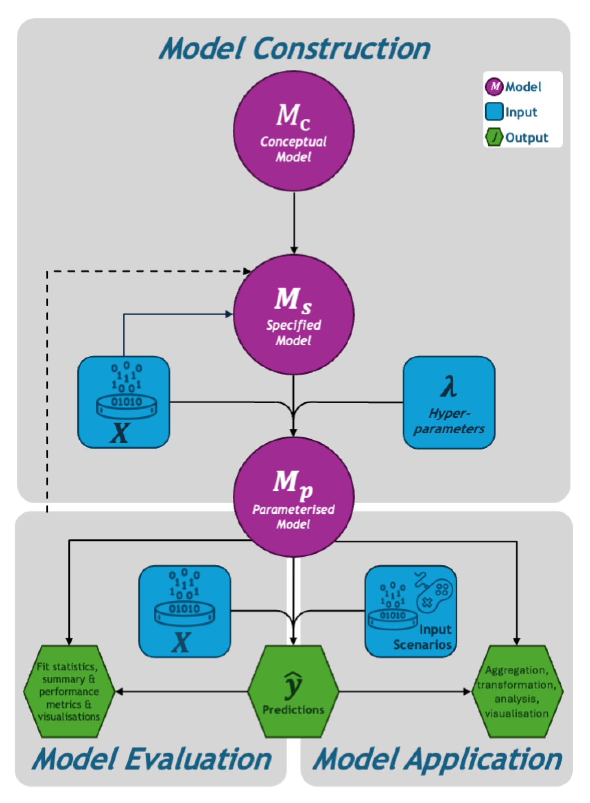
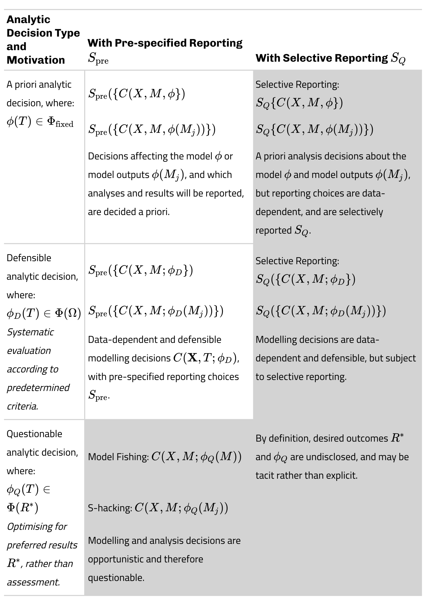

The University of Melbourne, School of Agriculture, Food and Ecosystem Sciences
Hannah S. Fraser
The University of Melbourne, School of Agriculture, Food and Ecosystem Sciences
Bonnie C. Wintle
The University of Melbourne, School of Agriculture, Food and Ecosystem Sciences
Libby Rumpff
The University of Melbourne, School of Agriculture, Food and Ecosystem Sciences
Fiona Fidler
The University of Melbourne, School of Historical and Philosophical Studies
Published
February 18, 2026
Abstract
Questionable research practices (QRPs) bias the published literature towards apparently strong and conclusive results, resulting in low rates of replicability. Recent metaresearch reveals that ecology is not immune to the ‘reproducibility crisis’ seen in other disciplines, due to similar rates of QRPs and a lack of transparency in published research. However, metaresearch to date focuses on hypothesis-testing research and treats data-dependent analytic decisions as inherently questionable. This is not a good fit for ecology and related fields that conduct exploratory or predictive research using complex models, where data-dependent decisions are often necessary and legitimate aspects of the modelling process.
To aid in understanding why and how frequently QRPs occur, and how severe the consequences might be, we develop a conceptual framework describing QRPs in ecological modelling, distinguishing questionable from legitimate data-dependent decisions. we present a typology of QRPs organised by decision-making mechanism and target, reframing QRPs in modelling as practices that inflate perceived model credibility, rather than as producing false-positive statistical results.
We identified six QRP classes that may occur at various points in the modelling process: selective reporting, S-hacking (manipulating performance metrics), model fishing, sample curation, HARKing and overhyping. These practices threaten the reliability and reproducibility of model-based research by artificially inflating the apparent credibility of models.
We aim to raise awareness among modellers about different types of QRPs and how they might emerge in ecological modelling. We offer strategies to mitigate QRP risks, while preserving legitimate adaptive decision-making characteristic of ecological modelling.
Keywords
questionable research practices, ecological modelling, metaresearch, transparency, reproducibility, model credibility, researcher degrees of freedom
1 Introduction
Self-report surveys of researchers’ statistical practices suggest high rates of Questionable research practices (QRPs) in several different disciplines: psychology (John, Loewenstein, and Prelec 2012), education (Makel et al. 2023) and ecology (Fraser et al. 2018). QRPs are a set of methodological and statistical practices that can substantially influence research conclusions, and include practices like p-hacking, hypothesising after results are known (HARKing) and selective reporting of results (see Table 1). These practices fall into an “ethical grey zone” between ideal responsible research conduct and unacceptable research behaviours like fabrication and plagiarism (Butler, Delaney, and Spoelstra 2017, 94). Widespread QRPs, accompanied by a lack of transparency and openness in research reporting (Culina et al. 2020), can leave disciplines at risk of a ‘reproducibility crisis’ (Fidler et al. 2017).
Current definitions and lists of QRPs are focused on hypothesis testing research (specifically, null hypothesis significance testing; NHST), characterising these practices as inflating the probability of false positive findings (see Table 3 in Nagy et al. 2025). This definition makes sense in this context, since this is the primary statistical estimand on which a finding is deemed ‘publishable’ in null-hypothesis significance testing. Indeed, Fraser et al.’s (2018) survey of ecology researchers asked how often they used QRPs documented in other disciplines, and many QRPs relate to p-values (Table 1). However, this NHST-centric focus creates particular challenges for ecology, because, although NHST is still popular in ecology (Fidler et al. 2017; Stephens, Buskirk, and Rio 2007), model-based methods in ecology are increasingly common, especially within applied research contexts (Connolly et al. 2017; García-Díaz et al. 2019; DeAngelis et al. 2021). The emphasis of existing QRP definitions on Type I errors is unhelpful for model-based research because multiple sources and types of error may arise in the modelling process; there is model structural uncertainty, uncertainty in parameter estimates and predictions, and uncertainty in scenarios (Rounsevell et al. 2021; Simmonds et al. 2024). What constitutes an ‘error’, the source of that error, as well as the relative weighting of different errors, depend on some combination of the model’s purpose (prediction, explanation, description), the type of model used (correlative or mechanistic) and the context for the model. Without a more encompassing definition of QRPs, ecological modellers may be inclined to think that concerns associated with QRPs and reproducibility are irrelevant, since many of the practices described as questionable within an NHST context do not directly relate to their work.
Table 1: Examples and self-reported frequency of questionable research practices (QRPs) in hypothesis-testing research in ecology and evolutionary biology. QRPs are categorised as “cherry-picking,” “p-hacking,” and “methodologically flawed,” indicated by the cherry, saw, and cross icons respectively. Data compiled from Fraser et al. (2018) and abbreviations defined by Makel et al. (2023). Ecology: \(n=494\); Evolution: \(n=313\).
Questionable Research Practice
Abbreviation
Ecology
Evolution
Not reporting response (outcome) variable that failed to reach statistical significance.
Omitting non-significant studies or variables.
64%
64%
Not reporting covariates that failed to reach statistical significance (e.g. p <= 0.05) or some other desired statistical threshold.
Omitting non-significant covariates.
45%
43%
Reporting an unexpected finding as having been predicted from the start.
HARKing.
49%
54%
Reporting a set of results as the complete set of analyses when other analyses were also conducted.
Omitting analyses.
53%
53%
Rounding off a p-value or other quantity to meet a pre-specified threshold.
Rounding p-values.
27%
18%
Deciding to exclude data points after first checking the impact on statistical significance.
Data Exclusion (ARKing).
24%
24%
Collecting more data after inspecting whether the results are statistically significant.
Data peeking.
37%
51%
Changing to another type of statistical analysis after the analysis initially chosen failed to reach statistical significance (e.g. p<= 0.05) or some other desired statistical threshold.
Analysis gaming.
54%
52%
Not disclosing known problems in the method, analysis or data quality that potentially impact conclusions.
Hiding methodological problems.
20%
22%
Filling in missing data points without identifying those data as simulated.
Filling in missing data.
5%
2%
Building on these limitations, we argue that current QRP frameworks fail to address model-based research because the underlying research processes are fundamentally different. One principle underlying the classification of these practices as ‘questionable’ relates to data driven decision making. In contrast to hypothesis testers, modellers make a series of analytic decisions on the basis of both objectively identified model performance criteria and subjective judgements (Babel, Vinck, and Karssenberg 2019; Bennett et al. 2013), whereby they shift between subjecting the model to analysis, validation and testing, and refining the model in response to those results (Getz et al. 2017). This process is non-linear, iterative, and generates many interim versions of the model preceding publication (Augusiak, Van den Brink, and Grimm 2014).
Rather than dichotomous inferences relying almost exclusively on p-values, model performance metrics include both qualitative and quantitative measures that incrementally build a subjective picture of model credibility (Augusiak, Van den Brink, and Grimm 2014; Hamilton et al. 2019). Since the publishability of a model-based study hinges on the collection of these model outputs and their contribution to overall model credibility, each of these model outputs may be susceptible to QRPs that aim to strategically alter the perceived credibility of the model.
As such, we argue that a conceptual framework of QRPs in model-based research must account for certain kinds of data-dependent decisions, which are appropriate and justifiable aspects of the modelling process, while highlighting the primacy of guarding against data-dependent decision-making that might be questionable. Moreover, the conceptual framework should de-emphasise the risk of type I errors and false positive findings to account for other biases more relevant to how complex models are evaluated and used.
This begs the question of whether QRPs are relevant to model-based research? If specific QRPs related to p-values do not apply, such as p-hacking, are there parallel or counterpart practices that do? What form might they take? And where in the research process would we be likely to locate them? This paper addresses each of these questions. My primary aim is to highlight the range of specific practices that are problematic in different stages of the modelling process, so as to identify the QRPs and associated decision-points relevant to model-based research. We aim to raise awareness among ecologists (and modellers within other disciplines) about the potential for QRPs throughout the modelling process. We hope to facilitate future attempts to estimate the severity and extent of QRPs and provide solutions to help mitigate questionable practices in model-based research.
1.1 Conditions for Questionable Research Practices in Ecological Modelling
Below we outline the conditions under which QRPs may arise in ecological modelling and give an overview of the modelling process and the ‘objects’ it produces (inputs, outputs, the model itself). This sets the scene for exploring how QRPs could unfold in model-based research.
1.1.1 What Makes a Model Publishable? Identifying motivations for QRPs
Understanding what makes ecological models “publishable” is crucial for identifying where QRPs might emerge, since publication bias provides a primary motivation for engaging in questionable practices (Ware and Munafò 2015). Unlike hypothesis testing research where p-values serve as the main target for manipulation, model-based research involves multiple attributes that collectively determine publishability. These attributes become potential targets for the QRP classes we later identify in the typology (Table 2).
Model Advantage and Novelty
Novelty is an important factor influencing the publishability of modelling research. Publication bias and funding stipulations reward and require advantage over existing approaches; either through development of new methodological approaches, enhanced performance of existing algorithms and modelling methods, or application of existing models to new contexts, such as new environmental conditions or ecological contexts (Alexandrov et al. 2011). Conversely, publication bias disincentivises the evaluation and testing of existing published models (Babel, Vinck, and Karssenberg 2019; Houlahan et al. 2016). This requirement for novelty incentivises model fishing and selective reporting, where researchers may opportunistically explore new modelling approaches until they achieve apparent superiority over baseline approaches.
Unlike the binary nature of statistical significance, model credibility builds incrementally through multiple performance metrics and evaluation approaches (Figure 1, model outputs). This multi-faceted assessment creates numerous opportunities for statistic hacking, or “S-hacking” (Table 2 and Table 3), where researchers can manipulate i) performance metric selection and thresholds, ii) validation approaches and data partitioning strategies, and iii) evaluation timeframes and spatial scales. The subjective nature of credibility assessment also fosters overhyping (Table 3), where model capabilities are overstated beyond what evaluation results justify.
Context-dependent Vulnerabilities
A suite of modelling objects is generated throughout the modelling process (described below), collectively building a subjective picture of the publishability and credibility of the model. These outputs may be manipulated to improve the chance of model acceptance or publication. Models that serve different purposes are vulnerable to different QRPs and depending on the combination of modelling approach, model type (e.g. agnostic, correlative, or mechanistic) and purpose of the model, QRPs will target different model objects (Hoffmann et al. 2021). For instance, when the modeller’s estimand of interest (“the target quantity to be estimated in an analysis,” Borger and Ramesh 2025, 2) are parameter estimates, like in many cases of explanatory modelling in ecology, then QRPs are likely to affect parameter estimates, parameter uncertainty, goodness-of-fit metrics, or variable importance measures. While for analyses concerned with model predictions, QRPs are more likely to affect model components, like forecast accuracy metrics and measures of model transferability. Different questionable practices are concentrated at different locations across modelling phases (Figure 2).
1.1.2 Which Modelling Objects (Inputs, Outputs, the Model Itself) Are Affected By QRPs?
To help conceptualise where in the modelling process QRPs might emerge, and which ‘model objects’ QRPs may affect, we first give an overview of the modelling process, articulating various inputs and outputs, including the model itself, model fit statistics, summary measures and other evaluation results (Figure 1), to which we ascribe mathematical notation.1 This framework will also provide the foundations for extending Gelman and Loken’s (2013) mathematical formalism to modelling (which we do in Section 1.3).
We acknowledge the plurality and lack of consensus in how the modelling process is described (Lahtinen, Guillaume, and Hämäläinen 2017), including the terminology used for different modelling phases, steps and tasks (Schmolke et al. 2010; Augusiak, Van den Brink, and Grimm 2014). Rather than adopting a comprehensive taxonomy that captures all distinct processes and categories of modelling, we instead describe the modelling process at a high-level that can be generalised across different model purposes, contexts, types and methods. There will, of course, be exceptions. Some aspects may not apply in every modelling problem, and the specific collection of model objects, their relative weighting in informing study conclusions, and the relative weighting of publishable attributes, will differ depending on the model purpose, context and methodology applied to the problem at hand. We also recognise that analysis decisions are procedurally dependent (Liu, Althoff, and Heer 2020), for instance, the way models are specified and parameterised depends on the model type (i.e. whether using a correlative, mechanistic, or agnostic model, sensuHoffmann et al. 2021) and modelling purpose (i.e. exploration, inference, prediction, see Tredennick et al. 2021).
We have divided the modelling process into three phases; 1) model construction, 2) model evaluation, and 3) model application. These distinctions align with the phases underpinning the preregistration template in Gould et al. (2025).

Figure 1: Three phases of model development: model construction, where the conceptual model \(M_c\) is specified into the formal model (\({M_c\rightarrow M}_s\)) then parameterised (\(M_s{\rightarrow M}_p\)); model evaluation, where the calibration and validation fits are evaluated, possibly leading to re-specification and re-parameterisation (dashed arrow); and model application, where the model is analysed to answer the research question.
Modelling generates objects, including the conceptual, specified and parameterised model, (\(\symbf{M}=\left\{M_c,M_s,M_p\right\}\), purple circles); model inputs (blue squares), including hyper parameters \(\lambda\) and calibration settings, data \(\symbf{X}\) for model parameterisation, evaluation and application. Model outputs (\(M_j\) green hexagons) include model predictions \(\hat{y}\), which are used to characterise model performance during model evaluation or subject to further aggregation, transformation, analysis and visualisation during model application.
Note: Data analyses may also inform model specification during construction. New or alternative input data may be used during scenario analysis to make predictions or projections about how the system will respond to intervention \(\hat{y}\).
Conceptual Model, \(M_c\)
To begin the model development process, a conceptual model, \(M_c\) or candidate set of models, \(\symbf{M_c}\) is specified by the modeller, synthesising their understanding of the ecological system. Conceptual models may be represented by a set of qualitative statements, mathematical formulas, or else visually as plots or directed acyclic graphs (Shmueli 2010). A candidate set of multiple models at this stage may represent competing hypotheses, where differences in the structure and/or parameterisation of the models represents critical uncertainty about the ecological system.
Specified Model, \(M_s\)
Next, the modeller formalises each conceptual model mathematically or statistically, \(M_s\) (Figure 1). The modeller chooses which variables should be included in the model, how to operationalise or represent them in the chosen framework, what the appropriate dependencies are between variables and the model type, and the functional form of the model (if relevant). Because the variables in the conceptual model are not directly observable, they are operationalised into measurable outcomes \(Y\) and input variables \(X\) in a data matrix \(\symbf{X} = {X_1, X_2,\ldots,X_p}\), where \(p\) is the number of input variables, and f represents a function relating \(Y\) to \(X\) such that \(E\left(Y\right) = f\left(\symbf{X}\right)\)(Hoffmann et al. 2021; Shmueli 2010). Note that, for some predictive modelling contexts, such as data-driven modelling employing black-box algorithmic approaches, like machine-learning, \(f\) may not be specified and is instead represented by \(\mathscr{I}_{\lambda}\) where \(\mathscr{I}\) represents some learning algorithm and \(\lambda\) denotes its hyperparameters (following Bischl et al. 2023). Exploratory analyses are often conducted at this stage to inform variable selection, for example by analysing variable importance and examining collinearity among variables (Kass et al. 2025).
Parameterised Model, \(M_p\)
Next, each specified model \(M_s\) is parameterised yielding \(M_p\) (Figure 1). Model parameters refer to any component of a model that can be quantified or estimated, such as slopes or intercepts in a linear regression or growth rate in a population model (García-Díaz et al. 2019, 2). Regardless of the overarching model purpose (e.g. explanation or prediction, Shmueli 2010), for correlative or agnostic (e.g. machine-learning) models, parameterisation typically occurs by estimation, or calibration, whereby the modeller applies techniques, like maximum-likelihood estimation or Bayesian inference, to the data matrix \(\symbf{X}\) (Figure 1) to estimate the parameters specified by \(f\), with uncertainty (García-Díaz et al. 2019; Hoffmann et al. 2021), yielding \(\hat{y}=\hat{f}\left(\symbf{X}\right)\). In the case of agnostic models, the algorithm \(\mathscr{I }_{\lambda}\) returns the fitted model and its parameters when applied to \(\symbf{X}\), \(\hat{y}=\hat{f}_{\hat{\lambda}}\left(\symbf{X}\right)\). Parameters of mechanistic models are typically provided as inputs to the specified model \(f\), gleaned from expert knowledge, published literature or via calibration (Hoffmann et al. 2021).
When conducting inference or explanatory modelling, the estimand(s) of interest are the parameters \(\symbf{\hat{\theta}}\), like standardised mean differences, correlation coefficients or response ratios (Williams et al. 2025), whereas for predictive modelling, predicted values \(\hat{y}\) constitute the estimand(s) of interest (Tredennick et al. 2021; Hoffmann et al. 2021; Shmueli 2010). This is true regardless of whether the model is correlative Silk, Harrison, and Hodgson (2020), mechanistic (e.g. a population viability model), or agnostic (e.g. a machine learning or deep learning models, Pichler and Hartig 2023). However, different types of models are more likely to be used for inference or prediction in practice, for example, agnostic models are more likely to be used for prediction, but inferences about parameters are certainly possible (Lucas 2020). Note that agnostic modelling approaches require the modeller to supply hyperparameters \(\symbf{\lambda}\) (Figure 1), which may be decided by the modeller, or else estimated by some tuning or optimisation method \(\symbf{\hat{\lambda}}\). Hyperparameters may influence the model learning process, such that with each set of hyperparameters the model will provide a different set of results (Ahmed et al. 2025).
Model Evaluation: Characterising model performance and fitness for purpose
Arriving at the optimal final model or collection of final models is typically iterative, determined by the outcomes of model validation and evaluation (Shmueli 2010) whereby the model is subjected to a series of analyses that generate performance measures that are used to establish its validity, reliability and credibility and ensuring that the model is fit for intended use (Bennett et al. 2013; Eker et al. 2018; García-Díaz et al. 2019; Rykiel Jr 1996).
I distinguish between model validation and model evaluation. Model validation checks that the fitted model \(M_p\) suitably approximates the data \(\symbf{X}\), and is evaluated using goodness-of-fit tests, and model diagnoses like residual analyses (Shmueli 2010). Model selection whittles down the candidate set of models into a single ‘best’ model or a smaller subset of ‘best models’ (e.g. AIC within \(\Delta2\)), after which the modeller might choose to consider multiple models or conduct model averaging. Outside of formal model selection approaches, the procedure for determining the best model(s) may involve a degree of trial and error of different model structures that is not always preplanned (i.e. new \(M_s\) are specified after validation).
Following validation, model evaluation of the best model(s) is undertaken, assessing the fitness of \(M_p\) for purpose by calculating additional performance measures to fully understand the model’s capabilities, like constructing confusion matrices or calculating omission and commission rates. Ultimately, model evaluation is case-dependent and context-specific insofar as the overall evaluation process, types of analyses, metrics, estimand of interest, and desirable properties of the model differing depending on the overarching modelling purpose and type of model and modelling approach (Tredennick et al. 2021; Bokulich 2013).
Model Application and Analysis
Once \(M_p\) is considered plausible and fit for purpose, the modeller shifts to model application (Engelschalt et al. 2023), querying the model and using the model to undertake analyses that inform the stated research questions (Figure 1). Prior to analysis, model output may be subject to further processing, for example, continuous predictions may be aggregated or transformed into binary predictions for visualisation and communication purposes (Feng et al. 2019). Explanatory model output may be visualised with coefficient plots, or effect size plots to inform the relevance of observed effects (Lüdecke et al. 2020). In applied settings, forecasts or anticipatory predictions into the future or across space are generated from the model based on plausible scenarios or to simulate outcomes under different management actions or policies (Paniw et al. 2023), which may be subject to a range of visualisations (e.g. Barros et al. 2023, fig. 2).
To summarise, a collection of model outputs are generated in modelling, which may variously be the target of QRPs, including: point-estimates; such as means, medians and effect-sizes; uncertainty measures, like confidence intervals, prediction intervals, standard errors; model performance metrics, like \(R^2\) / AIC / BIC; inference results, like p-values, credible intervals, and significance determinations; predictions and forecasts, like future values or classification outcomes; or, the model itself.
1.2 Mapping QRPs onto the Modelling Process
Here, we present a taxonomy and map of QRPs derived from the modelling literature, which aims to illustrate the different types of QRPs that might occur throughout different points in the modelling process. We follow with a synthetic example that reveals how these different types of QRPs might look in practice (Box 1).
1.2.1 Methods
We first surveyed the modelling literature to identify potential QRPs in ecological modelling and their location in the modelling process. QRPs were categorised into broader classes corresponding to families of similar practices using well-known published classifications (e.g. Table 1), adopting new classes when there was no analogue in the existing QRP literature. We coded the phase and sub-phase of modelling in which the practice occurs, as well as the target of the practice (input, model, output). After initial coding of the QRPs we generalised the descriptions of individual practices and categorised them according to a QRP class schema. The literature review and coding are described in further detail in Appendix 1.6.
1.2.2 Results
We identified six classes of QRPs: sample curation, model fishing, selective reporting, S-hacking, overhyping, HARKing (Table 1). All classes of QRPs have analogous practices under NHST, but the practices themselves are not directly comparable. The list of QRPs we identified is not exhaustive and instead illustrates a range of practices that can occur in model-based research (See Appendix 1.6, Table 4 for the complete list).
Paradigmatic examples of QRPs are presented for each class in a roadmap (Figure 2), illustrating that QRPs occur throughout all phases of the modelling process, and some may occur at multiple stages. Sample curation, S-hacking and fishing were the classes of QRPs most likely to occur during model construction. The iterative nature of model validation and evaluation creates multiple opportunities for opportunistic optimisation of apparent model performance during model evaluation, with selective reporting, S-hacking and model fishing primarily affecting this phase of modelling. Fewer, but distinct, QRP types were identified for the model application phase, primarily concerning the misrepresentation of model capabilities and findings.
The target objects affected by QRPs across modelling phases reflected the focus of modelling activities and tasks, with QRPs affecting the model itself occurring primarily during model construction and evaluation, and QRPs affecting the model outputs being concentrated in model evaluation and model application phases. Below, we briefly describe the different classes of QRPs, providing illustrative examples and explaining how they can bias results.
Code
waffle_plot_data <-tidy_QRP_database(here::here("data/QRP_database_2025-10-20.csv")) %>%filter(include) %>%select(-practice_notes,-model_subphase,-source,-qrp_reason,-include,-starts_with("practice_"),-file_name, practice_target ) %>%distinct() %>%#rm duplicate qrp_coded #TODO next merge duplicates while keeping sourcedrop_na() %>%#interim approach until datachecks in placemutate(model_phase =str_split(model_phase, ", "),practice_target =str_split(practice_target, ", "),values =1 ) %>%unnest(model_phase) %>%unnest(practice_target) %>%complete( qrp_description, model_phase, practice_target,fill =list(values =0.0001) # see https://github.com/hrbrmstr/waffle/issues/66 ) %>%group_by(qrp_description) %>%fill(qrp_coded, model_phase, .direction ="downup") %>%ungroup()
Figure 2: Synthesis of questionable research practices (QRPs) in ecological modelling. QRPs may target model inputs (blue squares), the model itself (purple squares), and/or model outputs (green squares), and may occur at different phases in the modelling cycle. QRPs are grouped according to broader classes defined in Table 3. See Table 4 for the full list of QRPs identified.
Selective Reporting
Selective reporting involves failure to disclose methods and/or results. Selective reporting can be distinguished from other practices, such as S-hacking and model fishing, in that it lends unwarranted credibility to the model, but the model and model outputs remain unaffected. Instead of analytic decisions being data-dependent, the communication of those results is data-dependent. The ‘garden of forking paths’ is not altered by selective reporting but rather is not fully transparent.
S-hacking
We expanded the concept of p-hacking and termed it ‘S-hacking’, or ‘statistic hacking’, which encompasses analogous practices in modelling that target metrics that contribute to the publishability of a model. S-hacking involves an element of selective reporting, but a critical point of difference is that S-hacking includes the execution of alternative analyses and manipulation of data, models, or outputs to obtain a favourable result. For example, a modeller may systematically trial multiple different evaluation metrics, selectively reporting only those that present the model in a favourable light (Hildebrandt 2018). In this instance the model remains unaffected by S-hacking. Alternatively, random seeds in model tuning can be changed after observing test set performance which can drastically alter model results (Liu, Althoff, and Heer 2020). If S-hacking is performed during model construction or validation, or alternative model specifications are trialled after observing model performance results, the model itself is altered, and overfitted to the training data. If S-hacking is performed during model construction or validation, the model is overfitted to the training data and poorly generalises to new data. S-hacking artificially inflates model performance, resulting in spuriously selected models that that may not reflect genuine ecological or predictive relationships. Any performance metric with a threshold dependent outcome (e.g. AUC, TSS, partial ROC, sensitivity, specificity, Feng et al. 2019) will be subject to the same types of practices as p-hacking.
Model Fishing
We distinguish ‘model fishing’ from the methodological technique of ‘model dredging’ for the purposes of exploration or model selection. In the case of formal model selection procedures employing dredging, there is some a priori chosen objective criteria on which the model is selected, and the model space (usually, though not always) is constrained by a priori specification of candidate models that are theoretically or ecologically motivated. In contrast, when conducting model dredging for the purposes of exploration in pursuit of generating new hypotheses, the initial model space may not be as constrained, but the dredging procedure is transparently reported, and the exploratory nature of the modelling exercise is disclosed and not mispresented post-hoc as otherwise. Model fishing occurs when the dredging procedure is not disclosed, and/or there is no formal criterion for model selection, and the overarching purpose is not exploration. Alternatively, model fishing can occur without dredging through a large model space, but by conducting alternative analyses or new model variations and selectively reporting only those with favourable results. Model fishing is problematic because of the risk of cognitive biases, such as hindsight bias, where post-hoc rationalisation combined with haphazard model selection leads to spuriously selected models. Model fishing therefore involves an element of systematic exploration of researcher degrees of freedom that is not necessarily planned, nor transparent.
Sample Curation
Sample curation (sensuNagy et al. 2025) includes a range of data-dependent decisions about model inputs without justification or prior planning, i.e. after model fitting or observing model evaluation or application results. Sample curation may include removing observations in order to make a correlation of interest become significant and generating a data-dependent criterion for the exclusion of particular observations (Nagy et al. 2025). Opportunistic handling of missing data could occur in a number of ways, for instance when a researcher attempts list-wise deletion, multiple imputation or inverse probability weighting. The expected results may only appear with one of those options, which is problematic if the researcher only reports this strategy in the paper, and omits the results from the other data handling methods (Nagy et al. 2025). Similarly, opportunistic stopping occurs when new data is collected and is used to re-parameterise the model after previously observing model validation and model evaluation results, without reporting results of earlier iterations (Table 3, Table 4).
Hypothesising After Results Are Known (HARKing)
Although the overarching purpose of ecological modelling in applied contexts is not hypothesis-testing, it is important to acknowledge that ecological models implicitly encapsulate hypotheses in the form of assumptions about which patterns, relationships, or predictors are most relevant to the system being modelled (Bodner, Fortin, and Molnár 2020; Prosperi et al. 2019; Schuwirth et al. 2019). For example, the choice of which variables to include or exclude from a model are based on implicit hypotheses about which processes are relevant to the system. In the case of modelling, HARKing can occur when a researcher presents a post-hoc explanation and justification for the variables or model structure that performed best, while failing to disclose the initial exploration of other variables or model structures. As such, HARKing in ecological modelling for purposes other than hypothesis testing is likely to occur as an effect of other related QRPs (Table 3) rather than as the motivating practice.
Overhyping
Overhyping involves claims about the models’ performance that are not substantiated by model evaluation results, such as claiming the model has greater generalisability than it does (Corneille et al. 2023). A specific form of overhyping involves misreporting correlative claims using causal language, which is particularly common in studies evaluating conservation interventions using observational study designs (Josefsson et al. 2020). The practice of implying causation from correlation can cause false confidence in the intervention’s effectiveness while ignoring the real mechanisms for the observed effect.
Box 1: Synthetic Example Of Questionable Research Practices In Applied Ecological Modelling
A modeller seeks to predict species abundance on the basis of habitat quality to help inform conservation management (Figure 3). When the modeller evaluates how two different management actions affecting habitat quality influence species abundance, the initial a priori model does not provide sufficient certainty for choosing between one action and another (Panel A, Stage 1). The modeller revises the model without theoretical justification, instead opportunistically trialling different models and selecting the one with the best Performance Score (Panel B). On checking the predicted species abundance for the two actions on the overfitted model, the modeller finds that the actions are still not clearly distinguishable in terms of their predicted outcomes (Panel A, Stage 2), so the modeller adjusts the scenario input values for the two management actions, and plots the predicted outcomes (Panel B, Stage 3). They are sufficiently happy that the model now clearly supports their preferred management action B and proceed to publish the overfitted model, its predictions and management recommendations without ever disclosing their model fishing and scenario hacking, effectively a form of HARKing (‘hypothesising after results are known’). The impacts of the modeller’s actions are summarised in Panel C.
Figure 3: A synthetic illustration of model fishing & scenario hacking (HARKing). A. Violin boxplots of predicted species abundance for two management actions from two models constructed at different stages of the modelling process: a priori model (stage 1), a model generated from a model fishing exercise (stage 2), and the same model, but illustrating scenario hacking (stage 3). Dots are predicted values. Violin outlines illustrate kernel density probability distributions, where the width of the shaded area represents the corresponding proportion of data. The model-estimated median and quartiles are displayed for each action. Colours correspond to the scenario actions displayed in Panel C. B. Performance Scores calculated from multiple model performance measures for the Initial Model and a new, superior Overfitted Model derived from model fishing (greater overall Performance Score). See Lüdecke et al. (2020) for metric calculation details. C. Predicted species abundance as a function of habitat quality for the Initial Model (yellow line) and the Overfitted Model generated from the model fishing exercise (dashed orange line). The management action scenarios used in the first two stages of modelling are shown as solid light blue and light green lines. Scenario hacking occurs when the modeller selects two new management scenarios with a greater difference in mean predicted species abundance under the Overfitted Model. See Appendix 1.7 for code.
1.3 Formalising the “Garden of Forking Paths” in Model-Based Research
In this section, I extend Gelman and Loken’s (2013) mathematical formalism explaining the emergence of QRPs, or the “garden of forking paths” to model-based research. Outlining the mathematical formulation of QRPs for ecological modelling helps to formally differentiate defensible and questionable data-dependent decisions.
As emphasised above, I hesitate to designate all data-dependent analytic decisions as questionable, as is implied in the prevailing literature on preregistration and QRPs. There are situations in modelling where decisions are necessarily dependent on the outcome of previous analytic decisions within the modelling workflow (Liu, Althoff, and Heer 2020), and so not all data-dependent analytic decisions are automatically questionable within the context of modelling. For example, many modelling decisions are data-driven, like the choice to remove correlated variables or checking for distributional assumptions to aid in deciding the most appropriate model functional form (See Gould et al. (2025), Figure 4for an example from the case study). Liu, Althoff, and Heer (2020) distinguish defensible from questionable motivations for engaging in data-dependent analytic decision-making, by classifying them as either systematic or opportunistic, respectively.
Box 2 helps us to formally distinguish between defensible and opportunistic data-dependent decisions, for both analytic and reporting decisions. This, in turn, helps to identify and distinguish between different types of QRPs in model-based research.
Box 2: Formal Description of Questionable Research Practices
The modeller makes a series of analytic decisions to derive \(M_p\) from \(M_s\), from \(M_c\), referred to hereafter as \(M\) for simplicity (see Section 1.1.2 for notation definitions). We term the sequence of modelling choices throughout the modelling process the realised “modelling path.” Analytic uncertainty, or analogously ‘researcher degrees of freedom,’ propagates combinatorially along each decision-point to inform a multiplicity of plausible analysis strategies (Hoffmann et al. 2021) constituting the “garden of forking paths” (Gelman and Loken 2013). Consider that a modeller faces some decision \(C\) along that path about a modelling task concerning model \(M\) and some observed data \(\symbf{X}\), with a predetermined choice or decision rule \(\phi\). Decisions made before observing data or model outputs reflect idealised practice where choices are predetermined and independent of results \(C(\mathbf{X}, M; \phi)\). When the modelling choice is “data-contingent” \(\phi(\symbf{X},M, M_j)\) insofar as it hinges on the observed state of the model(s) \(M\) and/or any associated outputs \(M_j\) and data \(\symbf{X}\) at that point along the modelling path, it satisfies a broad definition of ‘questionable.’
I define defensible data-dependent decisions \(\phi_D\) as following a systematic process \(\Psi_{\text{systematic}}\):
\[
\begin{aligned}
\phi_D(\mathbf{X}, M; \Omega, \Psi_{\text{systematic}}) = g(\mathbf{X}, M, \Omega)
\end{aligned}
\tag{1}\]
Where \(g(x)\) is a deterministic function of the data, model state, and predefined decision-rule \(\Omega\), based on systematic objectives such as, model adequacy, predictive accuracy or theoretical consistency.
In contrast, we define questionable practices \(\phi_Q\) as:
\[
\begin{aligned}
\phi_Q(\mathbf{X}, M; \Psi_{\text{opportunistic}}) = \phi^* \\
& \text{ such that } h(\phi^* | \mathbf{X}, M, R^*) \geq h(\phi | \mathbf{X}, M, R^*) \\
&\text{ for all } \phi \in \Phi
\end{aligned}
\tag{2}\]
Where the decision-making is opportunistic and result-seeking \(\Psi_{\text{opportunistic}}\), and \(h(\phi | \mathbf{X}, M, R^*)\) represents how well decision \(\phi\) serves the desired outcome \(R^*\). Data-contingent decisions are therefore questionable when a researcher’s drive to make their research publishable influences the direction that the realised modelling path takes.
A defining aspect of QRPs is that they remain undisclosed. Just as decisions about the modelling process can be questionable, so too can reporting practices. We apply the same logic describing questionable modelling practices to reporting practices:
\[
\begin{aligned}C_{\text{Reported}} = S({C(\mathbf{X}, M, \phi)})\end{aligned}
\tag{3}\]
Where \(S\) is a selecting function that determines what to report from a set of conducted analyses.
Journal method or article length conventions restrict complete transparency, and not all results can be reported. The decision about what to report from a set of conducted analyses \(S\) is made following predetermined plans \(\Omega\), not contingent on observed results \(S_{\text{pre}}\):
\[
\begin{aligned}S_{\text{pre}}({C(\mathbf{X}, M, \phi)}) = s({C(\symbf{X}, M, \phi)},\Omega)\end{aligned}
\tag{4}\]
Questionable reporting \(S_Q\), or as it is more commonly known, selective reporting, occurs when the reporting is opportunistic and contingent on the observed results, and optimised for desired outcomes \(R^*\):
\[
\begin{aligned}S_Q({C(\mathbf{X}, M, \phi)}; \Psi_{\text{opportunistic}}) = C^* \\ & \text{ such that } h(C^*|R^*) \geq h(C|R^*) \\
& \text{ for all } C \in {C(\mathbf{X}, M, \phi)}\end{aligned}
\tag{5}\]
I avoid defining \(\Psi_{\text{systematic}}\) reporting decisions, as we did for modelling decisions, and instead advocate modellers prespecify what results will be reported.
1.4 A Typology of QRPs
Here, I present a typology of QRPs from which we designate the practices as questionable or defensible (Table 2). The typology considers combinations of the decision-making mechanism (a priori, defensible and questionable data-dependent decision-making), the target \(T\) of the practice (the model \(M\) or model outputs \(M_j\)), and the nature of reporting (prespecified or selective). This allows us to account for QRPs where the model and/or model outputs are directly affected by the questionable practice such that their realisations are different from what would have been observed if the practice was not undertaken (i.e. \(M^*\), \(M_j^*\)), as well as QRPs where the model and outputs remain unaffected, but are selectively reported.
Table 2 summarises the key distinctions resulting from the workings in Box 2, helping to distinguish between questionable and defensible data-dependent decision-making, and to identify different classes of QRPs, with which we provide formal examples. The rows in Table 2 discriminate between a priori and (defensible versus questionable) data-dependent decisions, while the columns distinguish between prespecified and selective reporting.
Code
##| results: asis #equations do not render otherwise##| html-table-processing: none #equations do not render otherwisemagick::image_read(here::here("tables", "QRP_typology.png")) |> magick::image_scale(geometry ="70%")
Table 2: Distinguishing between questionable and defensible motivations for decision making during modelling, and the target of the decisions. We designate questionable practices in grey shaded cells and assign practices to classes of QRPs (described in Table 3). See Box 2 for notation and expanded definitions.

No questionable practices occur when analytic and reporting decisions are made a priori (first row, first column) representing an idealised scenario (e.g. preregistered analyses), which is difficult to implement in practice for complex ecological modelling. Moving across to the right, all decisions about the modelling and analysis are made a priori, but the results are selectively reported to improve the apparent suitability of the model to the analysis problem (questionable).
The subsequent row represents situations where there are data-dependent choices made by the modeller, representing most situations in ecological modelling. In the first instance, there is some process stipulated a priori for deciding on how the modeller will resolve any data-dependent decisions (e.g. ‘registered flexibility,’ Gould et al. (2025)), and it is already decided what results will be reported (defensible). Moving to the next column over, the modeller uses registered flexibility to inform modelling choices, but in this case, they selectively report some results (questionable). In the first two rows, choices about the model and modelling analysis remain unaffected by QRPs, even when selective reporting occurs.
The final row of Table 2 indicates QRPs where data-contingent decisions are optimised for preferred results \(R^*\), affecting either the model and/or modelling outputs. Because QRPs involve a degree of non-disclosure and intransparency by definition (Definition 1), we have merged the two columns that distinguish between the presence of selective reporting. In Box 1 we formally illustrate this with two example QRPs, model fishing (affecting the model \(M\) itself) and scenario hacking (affecting the model outputs \(M_j\) only).
Definition 1 QRPs occur when a researcher makes opportunistic data-dependent analytic and/or reporting decisions; i.e., decisions that depend on an undisclosed desired outcome rather than a prespecified objective decision criterion, and which artificially inflate the apparent, accuracy, precision or performance of a model and/or its outputs, such that the model is perceived to be more publishable than it would be if the QRP had not occurred.
In Table 3, we present formal descriptions and practical examples of the different types of QRP in the typology. While some example scenarios may appear to be defensible data-dependent decisions (for example, testing different functional forms under ‘model fishing’), we include corresponding formal descriptions to remind the reader of the distinction between systematic and opportunistic analytic decision-making which denotes when data-contingent decisions are questionable, or not. We elaborate on these practices in the QRP map above (Section 1.2).
In summary, based on the mathematical formalism and typology, a clearer definition of QRPs in model-based research is apparent.
Table 3: Formal descriptions of QRP classes, their definitions and some practical examples.
QRP Class and Definition
Example Scenarios
Description
Formal Description
Selective Reporting Choosing to report only certain analyses, models, metrics, model results or comparisons that yield favourable results or desired conclusions without disclosing the full range of analyses performed.
Multiple model testing with selective reporting
Reporting only the model with best R² (testing linear, polynomial, and exponential models)Highlighting only the ecological model supporting preferred hypothesis
Reporting only the model with best R² (testing linear, polynomial, and exponential models)
Highlighting only the ecological model supporting preferred hypothesis
Testing multiple model structures \((M_1, M_2, \ldots, M_k)\) and reporting only the model that produces results most align* with desired outcomes \(R^*\).
\[\begin{align*} S_Q(\{C(\boldsymbol{X}, M_k, \phi^{(M)})\}_{k=1}^K; R^*) = C(\boldsymbol{X}, M_{k^*}, \phi^{(M)}) \\ \text{ such that } \\ h(C(\boldsymbol{X}, M_{k^*}, \phi^{(M)}) \vert R^*) \geq h(C(\boldsymbol{X}, M_k, \phi^{(M)}) \vert R^*) \\ \text{ for all } k \in \{1,\ldots,K\} \end{align*}\]
Multiple output evaluation with selective reporting
Reporting only significant goodness-of-fit metricsHighlighting only time periods showing desired trendsEmphasising model predictions supporting preferred conclusions
Reporting only significant goodness-of-fit metrics
Highlighting only time periods showing desired trends
Emphasising model predictions supporting preferred conclusions
Evaluating multiple outputs \(({M_j}_1, {M_j}_2, \ldots, {M_j}_j)\) from same model (different metrics, time periods, spatial scales, etc.) and reporting only those that align with desired outcomes \(R^*\).
\[\begin{align*} S_Q(\{C(\boldsymbol{X}, M, \phi_j^{(M_j)})\}_{j=1}^J; R^*) = C(\boldsymbol{X}, M, \phi_{j^*}^{(M_j)}) \\ \text{ such that } h(C(\boldsymbol{X}, M, \phi_{j^*}^{(M_j)}) \vert R^*) \geq h(C(\boldsymbol{X}, M, \phi_j^{(M_j)}) \vert R^*) \\ \text{ for all } j \in \{1,\ldots,J\} \end{align*}\]
Model Fishing
Exploring model specifications or (fitting) variable combinations without theoretical justification, seeking favourable results, undisclosed.
Adopting the ecological process model that supports preferred management conclusionsChoosing model covariates giving desired effect directionSettling on model complexity producing significant results rather than optimal predictive performance
Adopting the ecological process model that supports preferred management conclusions
Choosing model covariates giving desired effect direction
Settling on model complexity producing significant results rather than optimal predictive performance
Testing multiple model \((M_1, M_2, \ldots M_k\)) structures or specifications and selecting model based on results most align* with desired outcomes \(R^*\), rather than following pre-specified model selection criteria or theoretical justification.
\[\begin{align*} \phi_Q^{(M)}(\boldsymbol{X}, M; R^*) = M_{k^*} \text{ such that } \\ h(C(\boldsymbol{X}, M_{k^*}, \phi) \vert R^*) \geq h(C(\boldsymbol{X}, M_k, \phi) \vert R^*) \\ \text{ for all } k \end{align*}\]
S-hacking Statistic-hacking
Manipulating model inputs, outputs or the model itself (random seeds, outcome variable and/or performance thresholds or metrics) to obtain a favourable value of a performance measure (statistic or metric), without disclosing.
Reporting only best performing goodness-of-fit metrics (after testing \(R^2\), AIC, RMSE, etc)Selecting validation approaches (cross-validation, holdout, bootstrap) based on most accurateAdjusting thresholds until desired statistical outcomes are achieved
Reporting only best performing goodness-of-fit metrics (after testing \(R^2\), AIC, RMSE, etc)
Selecting validation approaches (cross-validation, holdout, bootstrap) based on most accurate
Adjusting thresholds until desired statistical outcomes are achieved
Trialling different performance metrics (\({M_j}_1, {M_j}_2, \ldots, {M_j}_j\)), evaluation thresholds, or validation approaches and selecting metric with best model performance \(R^*\) (not pre-specified or theoretically justified).
\[\begin{align*}\phi_Q^{(Mj)}(\boldsymbol{X}, M; R^*) = M_{j^*} \text{ such that } \\ h(M_{j^*}(C(\boldsymbol{X}, M, \phi)) \vert R^*) \geq h(M_j(C(\boldsymbol{X}, M, \phi)) \vert R^*) \\ \text{ for all } j \end{align*}\]
Sample Curation
Selectively including, excluding, or modifying data points in the sample used to develop or evaluate a model without disclosure, often to improve model performance (a specific instance of S-hacking).
Removing “inconvenient” sites that don’t fit expected patternsAdjusting temporal boundaries to exclude unfavourable periods
Removing “inconvenient” sites that don’t fit expected patterns
Adjusting temporal boundaries to exclude unfavourable periods
The modeller trials different curated versions of the original dataset \(\boldsymbol{X}\) in order to achieve a model that meets desired outcomes \(R^*\), without a priori exclusion rules or statistical/ theoretical basis.
\[\begin{align*}\phi_Q^{(\boldsymbol{X})}(\boldsymbol{X}, M; R^*) = \boldsymbol{X}^* \text{ such that } \\ h(C(\boldsymbol{X}^*, M, \phi) \vert R^*) \geq h(C(\boldsymbol{X}', M, \phi) \vert R^*) \\ \text{ for all } \boldsymbol{X}' \in \mathcal{X}(\boldsymbol{X})\end{align*}\]
HARKing Hypothesising After Results are Known
Selected model(s) and/or results presented as if pre-specified and theoretically justified before data exploration or parameterisation, and model selection procedure is not disclosed or adequately described. May accompany fishing expeditions, model dredging analyses and model selection procedures that have been selectively reported.
Post-hoc ecological theories used to justify variable inclusion, when exploratory analyses reveals unexpected predictive variablesTheoretical explanation created post-hoc for model structures that unexpectedly perform well against other models
Post-hoc ecological theories used to justify variable inclusion, when exploratory analyses reveals unexpected predictive variables
Theoretical explanation created post-hoc for model structures that unexpectedly perform well against other models
Post-hoc conceptual models are constructed to explain model results, serving desired outcomes \(R^*\).
\[\begin{align*}H_Q(\boldsymbol{X}, M, C; R^*) = H^* \text{ such that } \\ \text{consistency}(H^*, C(\boldsymbol{X}, M, \phi)) \geq \text{consistency}(H', C(\boldsymbol{X}, M, \phi)) \\ \text{ for all } H' \in \mathcal{H}\end{align*}\] , where: \(M_c^∗\) represents the post-hoc conceptual model, \(M_c\) is the space of possible conceptual models, consistency() measures how well a conceptual model explains the observed results
Overhyping
Exaggerating the capabilities, generalisability, or reliability of a model beyond what is justified by the evidence.
Typically, overhyping features in the discussion section of a paper
Typically, overhyping features in the discussion section of a paper
—
—
1.5 Discussion
Researcher degrees of freedom threaten the credibility and reliability of model-based research, just as they do in hypothesis testing research. The findings of this Chapter underscore that researcher degrees of freedom abound in the modelling process, providing ample opportunity for QRPs that accompany researchers’ drive to publish. This aligns with Liu et al.’s (2020) qualitative analysis of how researchers make analytic decisions when faced with arbitrary choices or analytic uncertainty in the context of a research culture that promotes publication bias. We showed that QRPs can occur at any point in the modelling process, and may affect different model objects, including the model inputs, the model itself, or model outputs. While our analysis identified that classes of QRPs are analogous to those in hypothesis-testing research, we also showed that there are unique aspects of methodological practices in ecological modelling that mean we need to define ‘questionable’ research practices in our own terms – namely, in terms that accommodate the iterative and adaptive nature of the modelling process and the need to make data-contingent decisions when modelling. These features of model development have resulted in significant resistance to the idea of QRPs in model-based research, and to the applicability of preregistration for mitigating them in ecological modelling (MacEachern and Van Zandt 2019; Dwork et al. 2015). We explore these tensions below, emphasising how the conceptual framework provides a way forward through the tricky problem of delineating where the concept of QRPs apply in ecological modelling, and where it does not.
1.5.1Transparency Determines When ‘Poor Practices’ are ‘Questionable’
Many of the practices I identified as ‘questionable’ could simply be considered ‘poor practice,’ especially when those practices result in biased or overfitted models. The modelling context, including constraints on feasibility, data availability and coverage, together with the model purpose (e.g. prediction versus inference) will delineate when such practices are questionable or methodologically flawed. The fundamental issue with QRPs is that they remain undisclosed. Given that QRPs are practices that artificially improve the way models are perceived, full transparency allows the reader to appraise the appropriateness of practices like altering data, changing model specifications, or calculating additional performance metrics, contingent on the modelling context (Woo, O’Boyle, and Spector 2017). Transparent reporting is essential for properly evaluating the credibility and suitability of the model for its intended application.
1.5.2Opportunism Setermines When Data-dependent Analytic Decisions are ‘Questionable’
Gelman and Loken’s (2013) formalism describing the garden of forking paths implies that data-dependent decisions, at least in the context of null hypothesis significance testing, are inherently questionable. This has limited relevance in ecological modelling because it is inherently adaptive. My extension of the formalism to model-based research circumvents this incompatibility by distinguishing opportunistic from systematic data-dependent decisions. Based on our formalism, I argue that data-driven analysis decisions are not inherently questionable. Questionable practices occur when the decision is contingent on the observed results, and the choice is based on how well it serves undisclosed desired outcomes, whereas defensible data-contingent decisions follow a prespecified decision rule.
1.5.3 Data Constraints Amplify the Risk of QRPs
The nature of ecological data confers specific vulnerabilities to QRPs during ecological modelling. Small datasets are prevalent in ecology and often have inconsistent structure due to being collected intermittently or on a one-off occasion (Todman, Bush, and Hood 2023), or there are spatial constraints. Additionally, data collection is highly constrained by budget and logistical feasibility, consequently field ecologists often take a ‘kitchen sink’ approach to data collection, whereby they “often measure almost everything they can” (Mac Nally 2000, 669). Models that analyse small datasets are more likely to be overfitted due to the high number of parameters compared to the degrees of freedom in the data (Todman, Bush, and Hood 2023).
These conditions provide substantial opportunity for unconstrained dredging of model space whereby modellers include covariates with little or no theoretical justification or ecological relevance, leading to biologically implausible models being considered (Fourcade, Besnard, and Secondi 2018; Shmueli 2010; Franks, Ruxton, and Sherratt 2025). Although I classified these “causal salad” approaches to modelling (McElreath 2020) as ‘poor practice’ instead of QRPs, when modellers are engaged in model dredging without predetermined selection rules and criteria, the risk of both poor and questionable practices, like model fishing, is heightened under these conditions.
Many of the questionable practices I identified – particularly overhyping claims and misreporting correlative findings with causal language – specifically target perceptions of model reliability, accuracy, and generalisability rather than traditional statistical thresholds. This supports a model-centric definition of QRPs as practices that “artificially inflate the apparent accuracy or precision of a model, its predictions, and/or evaluation tests.” The mathematical formalism in the typology demonstrates the diverse ways researchers can manipulate both technical model properties and broader perceptions of model fitness for purpose, providing a comprehensive framework for understanding questionable practices in model-based research.
QRPs collectively undermine the reliability and reproducibility of ecological modelling research in several ways:
Inflated performance estimates that do not reflect true performance and result in overfitting.
Spurious model selection that identifies models based on chance rather than plausible biological mechanisms or predictive relationships.
Reduced reproducibility due to undisclosed researcher degrees of freedom.
Compromised generalisability from overfitted models that fail to transfer to new contexts or make accurate forecasts.
False confidence in ecological understanding and management recommendations.
Overfitted models are fitted to both regular and irregular features of the sampled data but are unable to distinguish between them (Pu et al. 2019), generating spurious predictions that poorly generalise to new data (Todman, Bush, and Hood 2023; Lewis et al. 2023). In applied ecological modelling, where modelling is often focused on generating anticipatory predictions to inform management or policy decisions, this is particularly problematic.
The prevalence of these practices suggests systemic issues in training, incentives, and quality control within the ecological modelling community. The concentration of QRPs in the model construction and evaluation phases indicates particular vulnerabilities in how models are specified, fitted, and evaluated. The large number of decision-points where researchers can exercise degrees of freedom suggest that safeguards should target these critical phases of the modelling process.
1.5.5 Potential Solutions
Raising Awareness
Awareness of the distinction between systematic and opportunistic data-dependent decisions is limited, and because some data-dependent decisions are a legitimate aspect of the modelling process, it may seem that all data-dependent decisions are acceptable. The impact of data-dependent decisions in machine learning is increasingly understood and is encapsulated within the term ‘data leakage,’ whereas in ecological modelling more broadly, the equivalent problem of ‘model selection bias’ remains mostly overlooked (Campbell 2021) and underappreciated within applied research contexts (Arnqvist 2020). Here, I emphasise an intersecting problem that has been attributed as a major cause of science’s reproducibility crisis, where data-contingent decisions may be opportunistically exploited to increase the likelihood of publication. I have formalised the distinction between defensible or questionable research practices, facilitating a modelling-appropriate conceptualisation of QRPs. As a first step in addressing the threat of QRPs to the credibility of model-based research, I wish to draw attention to this distinction – and the possible consequences of QRPs – among the ecological modelling community. However, given that cognitive biases are rarely deliberate, awareness alone is insufficient for preventing QRPs within a publish-or-perish research culture (Zvereva and Kozlov 2021).
Increasing Transparency
Modelling is not typically transparent, leaving readers unable to assess whether appropriate models were used or to identify the primary research contribution (Arnqvist 2020). Given that the threat of QRPs largely stems from a lack of disclosure, ecological modelling is at significant risk of QRPs. I echo broader calls for improving transparency in ecology (Parker et al. 2016; Powers and Hampton 2018; Rose E. O’Dea et al. 2021), emphasising that transparency is a fundamental requirement for reducing the risk of QRPs in ecological modelling. It is acknowledged that modelling’s lack of transparency is, in large part, driven by sociocultural and institutional norms that restrict the length of a paper, require a neat and coherent narrative and favour some data analysis techniques and results over others (Rijnhart et al. 2021). Broader methodological reform in research culture, as well as specific tools, are needed to achieve improvements in transparency.
Reporting checklists and guidelines outline a minimum set of methodological elements and results to include in published research and are increasingly being adopted by journals in ecology (Nature 2018; Fidler et al. 2018; Hillebrand and Gurevitch 2013; Haddaway et al. 2018; R. E. O’Dea et al. 2021). However, there are only a handful of reporting checklists developed for ecological modelling, and no ecology journals have encouraged or mandated modelling-specific checklists at the time of writing. I leave the work of defining the content of reporting checklists up to the ecological modelling community, but reiterate repeated calls in the modelling community to articulate the model’s purpose, context and performance criteria, ideally before modelling begins (Wood et al. 2020; Bennett et al. 2013; Jakeman, Letcher, and Norton 2006). This chapter illustrates when practices are questionable, and that many QRPs target or alter model performance metrics – either through direct manipulation of the model and model outputs, or through selective reporting. Specifying these decisions a priori and reporting them reduces inadvertent engagement in QRPs and equips readers to evaluate the risk of QRPs.
Preregistration & Registered Reports
Preregistration, and registered reports, have been hailed as a solution for preventing QRPs, and recent metaresearch empirically supports its efficacy (Burgman et al. 2023; Purgar et al. 2024; Nakagawa et al. 2025). However, there has been substantial resistance in model-related fields (MacEachern and Van Zandt 2019; Dwork et al. 2015) because preregistration is geared towards a NHST-focused definition of QRPs, that is, data-dependent analytic decisions. I argue here that there is a distinction to be made between systematic and opportunistic data-dependent analytic decisions in ecological modelling, where only the latter are questionable. For preregistration to be applied to ecological modelling, its internal logic must reflect alternative conceptualisations of QRPs that accommodate legitimate data-contingent decisions and iteration. It should allow for model revision while avoiding premature commitment to one approach (Hämäläinen and Lahtinen 2016; Benning et al. 2019; Evans et al. 2023). In Gould et al. (2025), I develop, apply and evaluate Adaptive Preregistration as a potential solution. If a complete preregistration is impractical, then at the very least, specifying a minimum set of evaluation analyses, metrics, and their performance criteria a priori is essential for avoiding QRPs.
1.5.6 Future Research
This paper has gone some way towards characterising QRPs to accommodate a diversity of modelling types within ecology. Further research could provide a deeper understanding of where and when these are applicable across ecology (or not). For example, looking across subfields, methodological approaches or model purposes: Do some QRPs pose more of a threat to reliability than others? Are some more likely than others? Are there specific forms they take? Preventative measures can then be tailored to particular use-cases.
This list of QRPs is not exhaustive, future research could also characterise additional QRPs not described here, perhaps turning to other fields utilising model-based research to understand where questionable practices are more widely appreciated, such as Machine Learning (Hildebrandt 2018; McDermott et al. 2021; Stock, Gregr, and Chan 2023; Garbin and Marques 2022; Rosenblatt et al. 2024; Hosseini et al. 2020; Meding and Hagendorff 2024). Further, understanding the prevalence of QRPs in ecological modelling would give an idea of the extent of the problem in the published literature and help prioritise potential reforms. Self-report surveys (e.g. Fraser et al. 2018) using our modelling-specific QRP classification would be a useful starting point. Empirical approaches to detecting the extent of QRPs might include approaches similar to p-curve analysis but investigating relevant model performance metrics (White et al. 2023).
1.5.7 Conclusion
In this paper, I aim to raise awareness among ecological modellers, and modellers among other scientific disciplines, about potential types of QRPs and their mechanisms for emergence in the modelling process. This is the first attempt to articulate how questionable research practices occur outside hypothesis testing research. The application is specific to ecological modelling, but the definition of QRPs presented here provides insights for modelling in other fields and other forms of non-hypothesis testing research. The conceptual framework and map of QRPs in this paper helps modellers understand the risks of QRPs in their research, so they are empowered to implement procedures that can mitigate their occurrence in their own research practice. Finally, meta-researchers and advocates of open-science can use the conceptual framework to underpin the design of modelling-appropriate methodological reforms that improve the credibility and robustness of model-based research in ecology and other fields.
1.6 QRP Literature Review
1.6.1 Step 1: Identify and collect QRPs
I haphazardly screened the published literature to generate an initial list of terms for QRPs in NHST research, to guide search term selection in ecological modelling and related modelling fields. I used the following search terms to identify potential QRPs in different areas of ecological modelling:
“modelling_area AND type I error”
“modelling_area AND false positive”
“modelling_area AND modelling choice”
“modelling_area AND subjective judgment”
“modelling_area AND prediction error”
“modelling_area AND confirmation bias”
“modelling_area AND publication bias”
“modelling_area AND questionable research practice”
“modelling_area AND researcher degrees of freedom”
“modelling_area AND cherry picking”
“modelling_area AND p-hacking”
“modelling_area AND HARKING”
“modelling_area AND bias”
“modelling_area AND good modelling practice”
“modelling_area AND best modelling practice”
“modelling_area AND bad modelling practice”
Where modelling_area included ‘predictive modelling’, ‘habitat modelling’, ‘Species Distribution Modelling (SDM)’, ‘Ecological Niche Modelling’, ‘Ecological Modelling’, ‘Environmental Modelling’.
I inferred QRPs from practices described by authors with value judgements, such as “good” or “best practice,” “bad” or “poor practice.” For positively ascribed practices, I took the logical inverse of these practices as the QRP. I ignored perceived ‘inconsequential’ practices, and instead included practices that were commonly or routinely conducted and where authors argued strongly for changes in research practices. I excluded QRPs that pertained to fraud, misconduct, or nefarious intent.
1.6.2 Step 2: Collate and Code QRPs
Collating & Coding
For each QRP identified, I collected a description of the research practice practice_description, the reason or justification for why the practice is ‘questionable’ practice_reason, including any quantitative and/or empirical evidence for: a) the negative consequences on research outcomes such as credibility, reliability, accuracy, precision, transparency, reproducibility and/or b) evidence for the use or occurrence of this practice; practice_evidence. I assigned each QRP to phases and sub-phases of the modelling process identified from Gould et al. (2025) where the practice occurs. For each description, reason and evidence, I coded each into short descriptions of the practice QRP_description, reason for the practice’s ‘questionable’ nature QRP_reason. Using the model phases and sub-phases identified in from the Adaptive Preregistration Template (See Appendix D4 in Gould et al. (2025)), I classified the location of the QRP in the modelling process, ascribing the model_phase and model_subphase in which the practice occurs. I then coded the target of the practice, i.e. the model object (Figure 1) directly affected by the practice. Where mitigation measures or solutions to the practice were suggested alongside the practice description, I also coded the practice_solution.
The raw data is available at:
Gould, Elliot (2025). Literature Survey of Questionable Research Practices in Ecological Modelling. The University of Melbourne. [Dataset]. https://doi.org/10.26188/30773906.v1
While, a formatted version can be downloaded and viewed in a web browser from:
Gould, Elliot (2025). Literature Survey of Questionable Research Practices. The University of Melbourne. [Online resource]. https://doi.org/10.26188/30773831.v1
Categorising QRPs into Classes
I adopted Nagy et al.’s (2025) approach and grouped QRPs consisting of the same family of research behaviours into broad classes QRP_coded. Some umbrella terms were common QRPs in hypothesis testing research, some were hypothesis-testing analogues, while others were modelling-specific. Where possible I used existing umbrella terms used by Nagy et al. (2025) and others (e.g. Liu, Althoff, and Heer 2020), but created other terms if no existing terms were applicable.
1.6.3 Step 3: Refine QRP and QRP Class descriptions, aggregate QRPs
I aggregated similar practices identified from different published sources practice_description into broader descriptions of individual QRPs QRP_description, which are listed in Table 4, along with their broader classes and point in the modelling process.
Table 4: Questionable research practices (QRPs) may occur in different phases and sub-phases of the ecological modelling process. QRPs were identified through literature review and classified into broader classes. For each unique practice (QRP ID), literature sources are detailed online at doi.org/10.26188/30773831.v1.
QRP Class
QRP ID
QRP description
Model phase
Model subphase
Model Fishing
5
Changing the model specification or otherwise continuing to optimise the model after already validating or evaluating it on the test or holdout data.
Model Construction Model Evaluation Model Application
Model Specification Model Performance Metric Model Tuning Outcome Variable
9
Conducting multiple different analyses or model variations after observing model checking / model performance results, selectively reporting only those analyses that yield favourable results without disclosing the full range of analyses performed.
Model Evaluation
—
13
Dredging for models in unconstrained model space, where model space is not informed by theory or consists of models that are biologically implausible.
Model Construction
Model Specification Model Selection
22
Focusing only on data / models that seemingly supports expectation or hypotheses, and disregarding evidence that does not corroborate hypotheses or expectation (even if present).
Model Construction
—
31
Over-simplifying models due to ideological stance rather than based on modelling objectives or performance measures linked to those objectives.
Model Construction
Model Specification
35
Re-partitioning data after observing model evaluation or model checking results.
Model Evaluation
Data Selection Data Partitioning
41
Trying out different outcome variables or model evaluation metrics unrelated to model objectives and selecting based on performance after fitting the model and/or observing model checking / model evaluation results.
Model Construction Model Evaluation Model Application
Modelling Approach Model Evaluation Approach Model Performance metric Model Performance Metric Outcome Variable
Overhyping
7
Claiming the model has greater generalisability or credibility than it does.
Model Application
Inference
26
Misreporting correlative claims using causal language.
Model Application
Inference
39
Selectively reporting comparisons that support a foregone conclusion.
Model Application
Model Results
Poor Practice
10
Constructing new model / using new modelling approach rather than applying pre-existing one that might be superior.
Model Construction
—
15
Failing to define model prediction properties.
Model Evaluation
Model Performance Metric
16
Failing to define or inadequately defining model purpose, framing and or scope.
Model Construction
—
17
Failure to clearly define research question or give precise definition of parameter of interest.
Model Construction
Model Purpose Outcome Variable
18
Failure to establish relative weighting of performance measures prior to beginning modelling.
Model Evaluation
Performance Measure Weighting
19
Failure to explicitly state the model purpose, and / or failure to establish a priori performance metrics and measures after establishing the model purpose before beginning modelling.
Model Evaluation Problem Formulation
Model Performance Metric Model Purpose
20
Failure to use biologically informed / justified predictor variables.
Model Construction
Model Specification
21
Failure to use theory in guiding model specification / using default controls in regression model that are uninformed by theory.
Model Construction
Model Specification Model Tuning
24
For studies developing new methods or approaches, optimising method / approach to improve the performance against baseline methods.
Model Construction
Method Selection / Model Selection
25
Improper use of model evaluation metrics (e.g. using an evaluation metric ill-suited to the stated model purpose).
Model Evaluation
Model Performance Metric
28
Misspecification of random effects structure by premature pruning of random effects / choosing random effect structure based on data rather than study design.
Model Construction
Model Specification Model Selection
29
Model Selection Bias: deciding post hoc which distributional assumptions should be accepted, i.e. performing preliminary tests for distributional assumptions on the same data used for model selection. For example, checking for zero-inflation or overdispersion on the same data used for model selection.
Model Construction
Model Selection
32
Overfitting a model to calibration dataset by including too many moderators or predictors relative to the size and complexity of the dataset.
Model Construction
Model Specification Model Tuning
33
Overfitting model to calibration data by adding additional parameters after observing fitted model.
Model Construction
Model Specification Model Tuning
34
Overuse of inferior, familiar methods / failing to adopt new, superior or best-practice methods.
Model Construction
Modelling Approach
36
Resubstitution: assessing model performance on training set only or failing to evaluate model on independent data, or on partitioned holdout data.
Model Evaluation Model Construction
Data Partitioning Model Tuning NA
38
Selective sampling / biased sampling, e.g. convenience or opportunistic sampling.
Model Construction
Data collection
42
Using bad or easily obtainable, or inappropriate data to develop model.
Model Construction
Data Processing
43
Using information-theoretic approaches to perform in-sample model assessment.
Model Evaluation
Model Performance Metric
S-hacking
1
Bayes Factor hacking: optimising the model to obtain a Bayes Factor above the required threshold.
Model Evaluation Model Construction
Data Processing Model Performance Metric Model Specification
2
Changing model output format or transformation after observing results.
Model Application
Model Results
3
Changing model output or evaluation metric thresholds after observing outcome.
Model Evaluation Model Application
Model Performance Metric Model Output
4
Changing random seed and refitting model after seeing results to improve model performance.
Model Construction Model Evaluation
Model Specification Model Tuning
6
Changing the relative weighting of model performance metrics after observing model results, when there are multiple model evaluation analyses.
Model Evaluation
Model Performance Metric
11
Discretising continuous variables after observing model checking / model performance results.
Model Construction Model Evaluation Model Application
Data Processing
12
Dredging fitted models for statistical significance or other outcome variable.
Model Construction Model Evaluation
Model Selection Model Performance Metric
Sample Curation
8
Collecting new data and refitting model after observing model evaluation / model checking results (optional stopping rules).
Model Construction Model Evaluation
Data Collection Data Processing
23
Focusing only on data that seemingly supports expectation or hypotheses, and disregarding data that does not corroborate hypotheses or expectation (even if present).
Model Construction
—
27
Missing data hacking: changing the strategy to handle missing data after fitting the model and observing model checking / model performance evaluation results.
Model Construction Model Evaluation
Data Processing
30
Modifying exclusion criteria or excluding data points, such as outliers or other values, without justification and prior planning, i.e. after fitting model and observing model evaluation / model checking results.
Model Construction Model Evaluation
Data Processing Model Performance Metric
Selective Debugging
14
Error checking only when unexpected or anomalous results are produced.
Model Construction Model Evaluation Model Application
Model Verification
Selective Reporting
37
Selective reporting of robustness checks in support of main results.
Model Evaluation
Robustness Checks
40
Selectively reporting performance metrics that increase perception of performance after fitting model and/or observing model evaluation / model checking results.
Model Construction Model Evaluation
Model Performance Metric
1.7 Synthetic Example Code
Listing 1: Code used to generate synthetic worked example in Figure 3.
Ahmed, Waqas, Vamsi Krishna Kommineni, Birgitta König-Ries, Jitendra Gaikwad, Luiz Gadelha, and Sheeba Samuel. 2025. “Evaluating the Method Reproducibility of Deep Learning Models in Biodiversity Research.”PeerJ Computer Science 11 (February): e2618. https://doi.org/10.7717/peerj-cs.2618.
Alexandrov, G. A., D. Ames, G. Bellocchi, M. Bruen, N. Crout, M. Erechtchoukova, A. Hildebrandt, et al. 2011. “Technical Assessment and Evaluation of Environmental Models and Software: Letter to the Editor.”Environmental Modelling & Software 26 (3): 328–36. https://doi.org/10.1016/j.envsoft.2010.08.004.
Arnqvist, Göran. 2020. “Mixed Models Offer No Freedom from Degrees of Freedom.”Trends in Ecology & Evolution 35 (4): 329–35. https://doi.org/10.1016/j.tree.2019.12.004.
Augusiak, Jacqueline, Paul J. Van den Brink, and Volker Grimm. 2014. “Merging Validation and Evaluation of Ecological Models to ‘Evaludation’: A Review of Terminology and a Practical Approach.”Ecological Modelling 280: 117–28. https://doi.org/10.1016/j.ecolmodel.2013.11.009.
Babel, Lucie, Dominique Vinck, and Derek Karssenberg. 2019. “Decision-Making in Model Construction: Unveiling Habits.”Environmental Modelling & Software 120: 104490. https://doi.org/10.1016/j.envsoft.2019.07.015.
Barros, Ceres, Yong Luo, Alex M. Chubaty, Ian M. S. Eddy, Tatiane Micheletti, Céline Boisvenue, David W. Andison, Steven G. Cumming, and Eliot J. B. McIntire. 2023. “Empowering Ecological Modellers with a PERFICT Workflow: Seamlessly Linking Data, Parameterisation, Prediction, Validation and Visualisation.”Methods in Ecology and Evolution 14 (1): 173–88. https://doi.org/10.1111/2041-210X.14034.
Bennett, Neil D., Barry F. W. Croke, Giorgio Guariso, Joseph H. A. Guillaume, Serena H. Hamilton, Anthony J. Jakeman, Stefano Marsili-Libelli, et al. 2013. “Characterising Performance of Environmental Models.”Environmental Modelling & Software 40: 1–20. https://doi.org/10.1016/j.envsoft.2012.09.011.
Benning, Stephen D., Rachel L. Bachrach, Edward A. Smith, Andrew J. Freeman, and Aidan GC Wright. 2019. “The Registration Continuum in Clinical Science: A Guide Toward Transparent Practices.”Journal of Abnormal Psychology 128 (6): 528.
Bischl, Bernd, Martin Binder, Michel Lang, Tobias Pielok, Jakob Richter, Stefan Coors, Janek Thomas, et al. 2023. “Hyperparameter Optimization: Foundations, Algorithms, Best Practices, and Open Challenges.”WIREs Data Mining and Knowledge Discovery 13 (2): e1484. https://doi.org/10.1002/widm.1484.
Bodner, Korryn, Marie-Josée Fortin, and Péter K. Molnár. 2020. “Making Predictive Modelling ART: Accurate, Reliable, and Transparent.”Ecosphere 11 (6). https://doi.org/10.1002/ecs2.3160.
Bokulich, Alisa. 2013. “Explanatory Models Versus Predictive Models: Reduced Complexity Modeling in Geomorphology.” In, 115–28. Springer International Publishing.
Borger, Mirjam J., and Aparajitha Ramesh. 2025. “Let’s DAG in: How Directed Acyclic Graphs Can Help Behavioural Ecology Be More Transparent.”Proceedings of the Royal Society B: Biological Sciences 292 (2051). https://doi.org/10.1098/rspb.2025.0963.
Briscoe, Natalie J., Jane Elith, Roberto Salguero-Gómez, José J. Lahoz-Monfort, James S. Camac, Katherine M. Giljohann, Matthew H. Holden, et al. 2019. “Forecasting Species Range Dynamics with Process-Explicit Models: Matching Methods to Applications.” Edited by Regan Early. Ecology Letters 22 (11): 1940–56. https://doi.org/10.1111/ele.13348.
Burgman, Mark, Rafael Chiaravalloti, Fiona Fidler, Yizhong Huan, Marissa McBride, Alexandru Marcoci, Juliet Norman, Ans Vercammen, Bonnie Wintle, and Yurong Yu. 2023. “A Toolkit for Open and Pluralistic Conservation Science.”Conservation Letters 16 (1): e12919. https://doi.org/10.1111/conl.12919.
Butler, Nick, Helen Delaney, and Sverre Spoelstra. 2017. “The Gray Zone: Questionable Research Practices in the Business School.”Academy of Management Learning & Education 16 (1): 94–109. https://doi.org/10.5465/amle.2015.0201.
Campbell, Harlan. 2021. “The Consequences of Checking for Zero-Inflation and Overdispersion in the Analysis of Count Data.” Edited by Robert B. O’Hara. Methods in Ecology and Evolution 12 (4): 665–80. https://doi.org/10.1111/2041-210x.13559.
Christin, Sylvain, Éric Hervet, and Nicolas Lecomte. 2020. “Going Further with Model Verification and Deep Learning.” Edited by Hao Ye. Methods Ecol Evol 12 (1): 130–34. https://doi.org/10.1111/2041-210x.13494.
Connolly, S. R., S. A. Keith, R. K. Colwell, and C. Rahbek. 2017. “Process, Mechanism, and Modeling in Macroecology.”Trends Ecol Evol 32 (11): 835–44. https://doi.org/10.1016/j.tree.2017.08.011.
Corneille, Olivier, Jo Havemann, Emma L Henderson, Hans IJzerman, Ian Hussey, Jean-Jacques Orban De Xivry, Lee Jussim, et al. 2023. “Beware ‘Persuasive Communication Devices’ When Writing and Reading Scientific Articles.”eLife 12 (May): e88654. https://doi.org/10.7554/eLife.88654.
Culina, A., I. van den Berg, S. Evans, and A. Sánchez-Tójar. 2020. “Low availability of code in ecology: A call for urgent action.”PLoS Biol. 18 (7): e3000763. https://doi.org/10.1371/journal.pbio.3000763.
DeAngelis, Donald L., Daniel Franco, Alan Hastings, Frank M. Hilker, Suzanne Lenhart, Frithjof Lutscher, Natalia Petrovskaya, Sergei Petrovskii, and Rebecca C. Tyson. 2021. “Towards Building a Sustainable Future: Positioning Ecological Modelling for Impact in Ecosystems Management.”Bulletin of Mathematical Biology 83 (10): 107. https://doi.org/10.1007/s11538-021-00927-y.
Dietze, Michael C., Andrew Fox, Lindsay M. Beck-Johnson, Julio L. Betancourt, Mevin B. Hooten, Catherine S. Jarnevich, Timothy H. Keitt, et al. 2018. “Iterative Near-Term Ecological Forecasting: Needs, Opportunities, and Challenges.”Proceedings of the National Academy of Sciences 115 (7): 1424–32. https://doi.org/10.1073/pnas.1710231115.
Dwork, Cynthia, Vitaly Feldman, Moritz Hardt, Toniann Pitassi, Omer Reingold, and Aaron Roth. 2015. “The reusable holdout: Preserving validity in adaptive data analysis.”Science 349 (6248): 636–38. https://doi.org/10.1126/science.aaa9375.
Eker, Sibel, Elena Rovenskaya, Michael Obersteiner, and Simon Langan. 2018. “Practice and Perspectives in the Validation of Resource Management Models.”Nature Communications 9 (1): 5359.
Engelschalt, Paul, Maxime Röske, Johanna Penzlin, Dirk Krüger, and Annette Upmeier zu Belzen. 2023. “Abductive Reasoning in Modeling Biological Phenomena as Complex Systems” 8 (October). https://doi.org/10.3389/feduc.2023.1170967.
Evans, Thomas Rhys, Peter Branney, Andrew Clements, and Ella Hatton. 2023. “Improving Evidence-Based Practice Through Preregistration of Applied Research: Barriers and Recommendations.”Accountability in Research 30 (2): 88–108. https://doi.org/10.1080/08989621.2021.1969233.
Feng, Xiao, Daniel S. Park, Cassondra Walker, A. Townsend Peterson, Cory Merow, and Monica Papeş. 2019. “A Checklist for Maximizing Reproducibility of Ecological Niche Models.”Nature Ecology & Evolution 3 (10): 1382–95. https://doi.org/10.1038/s41559-019-0972-5.
Fidler, Fiona, Yung En Chee, Brendan A. Wintle, Mark A. Burgman, Michael A. McCarthy, and Ascelin Gordon. 2017. “Metaresearch for Evaluating Reproducibility in Ecology and Evolution.”BioScience, biw159–8. https://doi.org/10.1093/biosci/biw159.
Fidler, Fiona, Hannah Fraser, Michael A McCarthy, and Edward T Game. 2018. “Improving the Transparency of Statistical Reporting in Conservation Letters.”Conservation Letters 11 (2): e12453. https://doi.org/10.1111/conl.12453.
Fourcade, Yoan, Aurélien G. Besnard, and Jean Secondi. 2018. “Paintings Predict the Distribution of Species, or the Challenge of Selecting Environmental Predictors and Evaluation Statistics.”Global Ecology and Biogeography 27 (2): 245–56. https://doi.org/10.1111/geb.12684.
Franks, Daniel W., Graeme D. Ruxton, and Tom Sherratt. 2025. “Ecology Needs a Causal Overhaul.”Biological Reviews 100 (5): 1950–69. https://doi.org/10.1111/brv.70029.
Fraser, Hannah, Tim Parker, Shinichi Nakagawa, Ashley Barnett, and Fiona Fidler. 2018. “Questionable Research Practices in Ecology and Evolution.” Edited by Jelte M. Wicherts. PLoS One 13 (7): e0200303. https://doi.org/10.1371/journal.pone.0200303.
Garbin, Christian, and Oge Marques. 2022. “Assessing Methods and Tools to Improve Reporting, Increase Transparency, and Reduce Failures in Machine Learning Applications in Health Care.”Radiology: Artificial Intelligence 4 (2): e210127. https://doi.org/10.1148/ryai.210127.
García-Díaz, P., T. A. A. Prowse, D. P. Anderson, M. Lurgi, R. N. Binny, and P. Cassey. 2019. “A Concise Guide to Developing and Using Quantitative Models in Conservation Management.”Conserv Sci Pract 1 (2): e11. https://doi.org/10.1002/csp2.11.
Gelman, Andrew, and Eric Loken. 2013. “The Garden of Forking Paths: Why Multiple Comparisons Can Be a Problem, Even When There Is No “Fishing Expedition” or “p-Hacking” and the Research Hypothesis Was Posited Ahead of Time.”Department of Statistics, Columbia University.
Getz, Wayne M., Charles R. Marshall, Colin J. Carlson, Luca Giuggioli, Sadie J. Ryan, Stephanie S. Romañach, Carl Boettiger, et al. 2017. “Making Ecological Models Adequate.” Edited by Tim Coulson. Ecology Letters 21 (2): 153–66. https://doi.org/10.1111/ele.12893.
Gould, Elliot, Christopher S. Jones, Jian D. L. Yen, Hannah S. Fraser, Henry Wootton, Megan K. Good, David H. Duncan, Cindy E. Hauser, Bonnie C. Wintle, and Libby Rumpff. 2025. “‘But i Can’t Preregister My Research’: Improving the Reproducibility and Transparency of Ecology and Conservation with Adaptive Preregistration for Model-Based Research.” Preprint. EcoEvoRxiv. https://doi.org/10.32942/X2GW66.
Haddaway, Neal R., Biljana Macura, Paul Whaley, and Andrew S. Pullin. 2018. “ROSES RepOrting Standards for Systematic Evidence Syntheses: Pro Forma, Flow-Diagram and Descriptive Summary of the Plan and Conduct of Environmental Systematic Reviews and Systematic Maps.”Environmental Evidence 7 (1): 7. https://doi.org/10.1186/s13750-018-0121-7.
Hämäläinen, Raimo P., and Tuomas J. Lahtinen. 2016. “Path Dependence in Operational ResearchHow the Modeling Process Can Influence the Results.”Operations Research Perspectives 3: 14–20. https://doi.org/10.1016/j.orp.2016.03.001.
Hamilton, Serena H., Baihua Fu, Joseph H. A. Guillaume, Jennifer Badham, Sondoss Elsawah, Patricia Gober, Randall J. Hunt, et al. 2019. “A Framework for Characterising and Evaluating the Effectiveness of Environmental Modelling.”Environmental Modelling & Software 118: 83–98. https://doi.org/10.1016/j.envsoft.2019.04.008.
Hildebrandt, Mireille. 2018. “Preregistration of Machine Learning Research Design Against p-Hacking.” In, edited by Irina Baraliuc Emre Bayamlıoğlu. Amsterdam, Netherlands: Amsterdam University Press.
Hillebrand, Helmut, and Jessica Gurevitch. 2013. “Reporting Standards in Experimental Studies.”Ecology Letters 16 (12): 1419–20. https://doi.org/10.1111/ele.12190.
Hoffmann, S., F. Schönbrodt, R. Elsas, R. Wilson, U. Strasser, and A. L. Boulesteix. 2021. “The Multiplicity of Analysis Strategies Jeopardizes Replicability: Lessons Learned Across Disciplines.”R Soc Open Sci 8 (4): 201925. https://doi.org/10.1098/rsos.201925.
Hosseini, Mahan, Michael Powell, John Collins, Chloe Callahan-Flintoft, William Jones, Howard Bowman, and Brad Wyble. 2020. “I Tried a Bunch of Things: The Dangers of Unexpected Overfitting in Classification of Brain Data.”Neuroscience & Biobehavioral Reviews 119: 456–67. https://doi.org/10.1016/j.neubiorev.2020.09.036.
Houlahan, Jeff E., Shawn T. McKinney, T. Michael Anderson, and Brian J. McGill. 2016. “The Priority of Prediction in Ecological Understanding.”Oikos 126 (1): 1–7. https://doi.org/10.1111/oik.03726.
Jakeman, A. J., R. A. Letcher, and J. P. Norton. 2006. “Ten Iterative Steps in Development and Evaluation of Environmental Models.”Environmental Modelling & Software 21 (5): 602–14. https://doi.org/10.1016/j.envsoft.2006.01.004.
John, Leslie K., George Loewenstein, and Drazen Prelec. 2012. “Measuring the Prevalence of Questionable Research Practices with Incentives for Truth Telling.”Psychological Science 23 (5): 524–32. https://doi.org/10.1177/0956797611430953.
Josefsson, Jonas, Matthew Hiron, Debora Arlt, Alistair G. Auffret, Åke Berg, Mathieu Chevalier, Anders Glimskär, et al. 2020. “Improving Scientific Rigour in Conservation Evaluations and a Plea Deal for Transparency on Potential Biases.”Conservation Letters 13 (5). https://doi.org/10.1111/conl.12726.
Kapoor, Sayash, and Arvind Narayanan. 2023. “Leakage and the Reproducibility Crisis in Machine-Learning-Based Science.”Patterns 4 (9): 100804. https://doi.org/10.1016/j.patter.2023.100804.
Kass, Jamie M., Adam B. Smith, Dan L. Warren, Sergio Vignali, Sylvain Schmitt, Matthew E. Aiello-Lammens, Eduardo Arlé, et al. 2025. “Achieving Higher Standards in Species Distribution Modeling by Leveraging the Diversity of Available Software.”Ecography 2025 (2): e07346. https://doi.org/10.1111/ecog.07346.
Lahtinen, Tuomas J., Joseph H. A. Guillaume, and Raimo P. Hämäläinen. 2017. “Why Pay Attention to Paths in the Practice of Environmental Modelling.”Environmental Modelling & Software 92: 74–81. https://doi.org/10.1016/j.envsoft.2017.02.019.
Lewis, Abigail S. L., Christine R. Rollinson, Andrew J. Allyn, Jaime Ashander, Stephanie Brodie, Cole B. Brookson, Elyssa Collins, et al. 2023. “The Power of Forecasts to Advance Ecological Theory.”Methods in Ecology and Evolution 14 (3): 746–56. https://doi.org/10.1111/2041-210x.13955.
Liu, Yang, Tim Althoff, and Jeffrey Heer. 2020. “Proceedings of the 2020 CHI Conference on Human Factors in Computing Systems.” In. ACM. https://doi.org/10.1145/3313831.3376533.
Lucas, Tim C. D. 2020. “A Translucent Box: Interpretable Machine Learning in Ecology.”Ecol Monogr 90 (4). https://doi.org/10.1002/ecm.1422.
Lüdecke, Daniel, Mattan Ben-Shachar, Indrajeet Patil, and Dominique Makowski. 2020. “Extracting, Computing and Exploring the Parameters of Statistical Models Using r.”Journal of Open Source Software 5 (53): 2445. https://doi.org/10.21105/joss.02445.
Mac Nally, Ralph. 2000. “Regression and Model-Building in Conservation Biology, Biogeography and Ecology: The Distinction Between and Reconciliation of ‘Predictive’ and ‘Explanatory’ Models.”Biodiversity and Conservation 9 (5): 655671. https://doi.org/10.1023/a:1008985925162.
MacEachern, Steven N., and Trisha Van Zandt. 2019. “Preregistration of Modeling Exercises May Not Be Useful.”Comput Brain Behav 2 (3-4): 179–82. https://doi.org/10.1007/s42113-019-00038-x.
Makel, Matthew C, Jaret Hodges, Bryan G Cook, and Jonathan A Plucker. 2023. “Both Questionable and Open Research Practices Are Prevalent in Education Research.”
McDermott, M. B. A., S. Wang, N. Marinsek, R. Ranganath, L. Foschini, and M. Ghassemi. 2021. “Reproducibility in machine learning for health research: Still a ways to go.”Sci Transl Med 13 (586). https://doi.org/10.1126/scitranslmed.abb1655.
McElreath, Richard. 2020. Statistical Rethinking: A Bayesian Course with Examples in R and Stan. 2nd ed. Chapman; Hall/CRC. https://doi.org/10.1201/9780429029608.
Meding, Kristof, and Thilo Hagendorff. 2024. “Fairness Hacking: The Malicious Practice of Shrouding Unfairness in Algorithms.”Philosophy & Technology 37 (1): 4. https://doi.org/10.1007/s13347-023-00679-8.
Nagy, Tamás, Jane Hergert, Mahmoud M Elsherif, Lukas Wallrich, Kathleen Schmidt, Jason W Payne, Biljana Gjoneska, et al. 2025. “Bestiary of Questionable Research Practices in Psychology.” https://doi.org/https://doi.org/10.31234/osf.io/fhk98_v2.
Nakagawa, Shinichi, David W. Armitage, Tom Froese, Yefeng Yang, and Malgorzata Lagisz. 2025. “Poor Hypotheses and Research Waste in Biology: Learning from a Theory Crisis in Psychology.”BMC Biology 23 (1): 33. https://doi.org/10.1186/s12915-025-02134-w.
Nature. 2018. “A Checklist for Our Community.”
O’Dea, R. E., M. Lagisz, M. D. Jennions, J. Koricheva, D. W. A. Noble, T. H. Parker, J. Gurevitch, et al. 2021. “Preferred Reporting Items for Systematic Reviews and Meta-Analyses in Ecology and Evolutionary Biology: A PRISMA Extension.”Biol Rev Camb Philos Soc 96 (5): 1695–1722. https://doi.org/10.1111/brv.12721.
O’Dea, Rose E., Timothy H. Parker, Yung En Chee, Antica Culina, Szymon M. Drobniak, David H. Duncan, Fiona Fidler, et al. 2021. “Towards Open, Reliable, and Transparent Ecology and Evolutionary Biology.”BMC Biology 19 (1): 68. https://doi.org/10.1186/s12915-021-01006-3.
Paniw, Maria, Roger D. Cousens, Chris Baker, and Thao Le. 2023. “Theory, Prediction and Application.” In, 127–49. Boca Raton: CRC Press. https://doi.org/10.1201/9781003314332-8.
Parker, T. H., E. Main, S. Nakagawa, J. Gurevitch, F. Jarrad, and M. Burgman. 2016. “Promoting Transparency in Conservation Science.” December.
Pichler, Maximilian, and Florian Hartig. 2023. “Machine Learning and Deep LearningA Review for Ecologists.”Methods in Ecology and Evolution 14 (4): 994–1016. https://doi.org/10.1111/2041-210X.14061.
Powers, Stephen M., and Stephanie E. Hampton. 2018. “Open Science, Reproducibility, and Transparency in Ecology.”Ecological Applications. https://doi.org/10.1002/eap.1822.
Prosperi, Mattia, Jiang Bian, Iain E. Buchan, James S. Koopman, Matthew Sperrin, and Mo Wang. 2019. “Raiders of the Lost HARK: A Reproducible Inference Framework for Big Data Science.”Palgrave Communications 5 (1). https://doi.org/10.1057/s41599-019-0340-8.
Pu, Xiaoying, Licheng Zhu, Matthew Kay, and Frederick Conrad. 2019. “Designing for Preregistration in Practice: Multiple Norms and Purposes.” In Proceedings of CHI Conference on Human Factors in Computing Systems (CHI’19 Extended Abstracts), 7. Scotland: ACM. https://doi.org/10.1145/3290607.3312862.
Purgar, Marija, Paul Glasziou, Tin Klanjscek, Shinichi Nakagawa, and Antica Culina. 2024. “Supporting Study Registration to Reduce Research Waste.”Nature Ecology & Evolution 8 (8): 1391–99. https://doi.org/10.1038/s41559-024-02433-5.
Rijnhart, J. J. M., J. W. R. Twisk, D. J. H. Deeg, and M. W. Heymans. 2021. “Assessing the Robustness of Mediation Analysis Results Using Multiverse Analysis.”Prev Sci, July. https://doi.org/10.1007/s11121-021-01280-1.
Risbey, James, Jeroen Van der Sluijs, Penny Kloprogge, Jerry Ravetz, Silvio Funtowicz, and Serafin Corral Quintana. 2005. “Application of a Checklist for Quality Assistance in Environmental Modelling to an Energy Model.”Environmental Modeling & Assessment 10 (1): 63–79.
Rosenblatt, Matthew, Link Tejavibulya, Rongtao Jiang, Stephanie Noble, and Dustin Scheinost. 2024. “Data Leakage Inflates Prediction Performance in Connectome-Based Machine Learning Models.”Nature Communications 15 (1): 1829. https://doi.org/10.1038/s41467-024-46150-w.
Rounsevell, Mark D. A., Almut Arneth, Calum Brown, William W. L. Cheung, Olivier Gimenez, Ian Holman, Paul Leadley, et al. 2021. “Identifying Uncertainties in Scenarios and Models of Socio-Ecological Systems in Support of Decision-Making.”One Earth 4 (7): 967–85. https://doi.org/10.1016/j.oneear.2021.06.003.
Rykiel Jr, Edward J. 1996. “Testing Ecological Models: The Meaning of Validation.”Ecological Modelling 90 (3): 229–44.
Schmolke, Amelie, Pernille Thorbek, Donald L. Deangelis, and Volker Grimm. 2010. “Ecological Models Supporting Environmental Decision Making: A Strategy for the Future.”Trends in Ecology & Evolution 25 (8): 479–86. https://doi.org/10.1016/j.tree.2010.05.001.
Schuwirth, Nele, Florian Borgwardt, Sami Domisch, Martin Friedrichs, Mira Kattwinkel, David Kneis, Mathias Kuemmerlen, Simone D. Langhans, Javier Martínez-López, and Peter Vermeiren. 2019. “How to Make Ecological Models Useful for Environmental Management.”Ecological Modelling 411: 108784. https://doi.org/10.1016/j.ecolmodel.2019.108784.
Silk, Matthew J., Xavier A. Harrison, and David J. Hodgson. 2020. “Perils and Pitfalls of Mixed-Effects Regression Models in Biology” 8 (August): e9522. https://doi.org/10.7717/peerj.9522.
Simmonds, Emily G., Kwaku P. Adjei, Benjamin Cretois, Lisa Dickel, Ricardo González-Gil, Jack H. Laverick, Caitlin P. Mandeville, et al. 2024. “Recommendations for Quantitative Uncertainty Consideration in Ecology and Evolution.”Trends in Ecology & Evolution 39 (4): 328–37. https://doi.org/10.1016/j.tree.2023.10.012.
Stephens, P. A., S. W. Buskirk, and C. M. del Rio. 2007. “Inference in Ecology and Evolution.”Trends Ecol Evol 22 (4): 192–97. https://doi.org/10.1016/j.tree.2006.12.003.
Stock, Andy, Edward J. Gregr, and Kai M. A. Chan. 2023. “Data Leakage Jeopardizes Ecological Applications of Machine Learning.”Nature Ecology & Evolution 7 (11): 1743–45. https://doi.org/10.1038/s41559-023-02162-1.
Todman, Lindsay C., Alex Bush, and Amelia S. C. Hood. 2023. “‘Small Data’ for Big Insights in Ecology.”Trends in Ecology & Evolution 38 (7): 615–22. https://doi.org/10.1016/j.tree.2023.01.015.
Tredennick, Andrew T., Giles Hooker, Stephen P. Ellner, and Peter B. Adler. 2021. “A Practical Guide to Selecting Models for Exploration, Inference, and Prediction in Ecology.”Ecology 102 (6): e03336. https://doi.org/10.1002/ecy.3336.
Ware, Jennifer J., and Marcus R. Munafò. 2015. “Significance Chasing in Research Practice: Causes, Consequences and Possible Solutions.”Addiction 110 (1): 4–8. https://doi.org/10.1111/add.12673.
White, Nicole, Rex Parsons, Gary Collins, and Adrian Barnett. 2023. “Evidence of Questionable Research Practices in Clinical Prediction Models.”BMC Medicine 21 (1). https://doi.org/10.1186/s12916-023-03048-6.
Williams, Coralie, Yefeng Yang, David I. Warton, and Shinichi Nakagawa. 2025. “Modelling Approaches for Meta-Analyses with Dependent Effect Sizes in Ecology and Evolution: A Simulation Study.”Methods in Ecology and Evolution 16 (10): 2362–79. https://doi.org/10.1111/2041-210X.70156.
Woo, Sang Eun, Ernest H. O’Boyle, and Paul E. Spector. 2017. “Best Practices in Developing, Conducting, and Evaluating Inductive Research.”Human Resource Management Review 27 (2): 255–64. https://doi.org/10.1016/j.hrmr.2016.08.004.
Wood, Connor M., Zachary G. Loman, Shawn T. McKinney, and Cynthia S. Loftin. 2020. “Testing Prediction Accuracy in Short-Term Ecological Studies.”Basic and Applied Ecology 43: 77–85. https://doi.org/10.1016/j.baae.2020.01.003.
Yates, K. L., P. J. Bouchet, M. J. Caley, K. Mengersen, C. F. Randin, S. Parnell, A. H. Fielding, et al. 2018. “Outstanding Challenges in the Transferability of Ecological Models.”Trends Ecol. Evol. (Amst.) 33 (10): 790–802. https://doi.org/10.1016/j.tree.2018.08.001.
Zvereva, E. L., and M. V. Kozlov. 2021. “Biases in ecological research: attitudes of scientists and ways of control.”Sci Rep 11 (1): 226. https://doi.org/10.1038/s41598-020-80677-4.
Footnotes
Boldface notation represents a vector or a set, indicating where multiples of those objects could be generated, e.g. there may be multiple ways to operationalise a conceptual model.↩︎
Citation
BibTeX citation:
@misc{gould2026,
author = {Gould, Elliot and S. Fraser, Hannah and C. Wintle, Bonnie
and Rumpff, Libby and Fidler, Fiona},
title = {A {Framework} for {Questionable} {Research} {Practices} in
{Ecological} {Modelling}},
date = {2026-02-18},
langid = {en},
abstract = {1. Questionable research practices (QRPs) bias the
published literature towards apparently strong and conclusive
results, resulting in low rates of replicability. Recent
metaresearch reveals that ecology is not immune to the
“reproducibility crisis” seen in other disciplines, due to similar
rates of QRPs and a lack of transparency in published research.
However, metaresearch to date focuses on hypothesis-testing research
and treats data-dependent analytic decisions as inherently
questionable. This is not a good fit for ecology and related fields
that conduct exploratory or predictive research using complex
models, where data-dependent decisions are often necessary and
legitimate aspects of the modelling process. 2. To aid in
understanding why and how frequently QRPs occur, and how severe the
consequences might be, we develop a conceptual framework describing
QRPs in ecological modelling, distinguishing questionable from
legitimate data-dependent decisions. we present a typology of QRPs
organised by decision-making mechanism and target, reframing QRPs in
modelling as practices that inflate perceived model credibility,
rather than as producing false-positive statistical results. 3. We
identified six QRP classes that may occur at various points in the
modelling process: selective reporting, S-hacking (manipulating
performance metrics), model fishing, sample curation, HARKing and
overhyping. These practices threaten the reliability and
reproducibility of model-based research by artificially inflating
the apparent credibility of models. 4. We aim to raise awareness
among modellers about different types of QRPs and how they might
emerge in ecological modelling. We offer strategies to mitigate QRP
risks, while preserving legitimate adaptive decision-making
characteristic of ecological modelling.}
}
For attribution, please cite this work as:
Gould, Elliot, Hannah S. Fraser, Bonnie C. Wintle, Libby Rumpff, and
Fiona Fidler. 2026. “A Framework for Questionable Research
Practices in Ecological Modelling.”
Source Code
---title: A Framework for Questionable Research Practices in Ecological Modellingrunning-head: Questionable Research Practices in Ecological Modellingauthor: - name: Elliot Gould email: elliot.gould@unimelb.edu.au orcid: 0000-0002-6585-538X url: https://github.com/egouldo corresponding: true affiliation: - ref: 1 - name: Hannah S. Fraser orcid: 0000-0003-2443-4463 affiliation: - ref: 1 - name: Bonnie C. Wintle orcid: 0000-0003-0236-6906 affiliation: - ref: 1 - name: Libby Rumpff orcid: 0000-0001-9400-8086 affiliation: - ref: 1 - name: Fiona Fidler orcid: 0000-0002-2700-2562 affiliation: - ref: 2affiliations: - id: 1 name: The University of Melbourne, School of Agriculture, Food and Ecosystem Sciences - id: 2 name: The University of Melbourne, School of Historical and Philosophical Studiesformat: html: page-layout: article title-block-banner: true code-fold: true code-tools: true number-sections: true number-depth: 3 code-block-bg: true code-block-border-left: "#31BAE9" code-overflow: wrap toc: true pdf: knitr: opts_chunk: dev: "cairo_pdf" keep-tex: true documentclass: scrartcl papersize: A4 fontsize: 11pt toc: false number-sections: true linkcolor: blue include: false echo: false header-includes: - \usepackage{mathtools} - \usepackage{amssymb} - \usepackage{xcolor} - \usepackage{booktabs, caption, longtable, colortbl, array} - \usepackage[font=small,labelfont={bf,small}]{caption}custom-numbered-blocks: classes: Box: boxstyle: foldbox.simple collapse: falsepdf-engine: lualatexabstract: | 1. Questionable research practices (QRPs) bias the published literature towards apparently strong and conclusive results, resulting in low rates of replicability. Recent metaresearch reveals that ecology is not immune to the ‘reproducibility crisis’ seen in other disciplines, due to similar rates of QRPs and a lack of transparency in published research. However, metaresearch to date focuses on hypothesis-testing research and treats data-dependent analytic decisions as inherently questionable. This is not a good fit for ecology and related fields that conduct exploratory or predictive research using complex models, where data-dependent decisions are often necessary and legitimate aspects of the modelling process. 2. To aid in understanding why and how frequently QRPs occur, and how severe the consequences might be, we develop a conceptual framework describing QRPs in ecological modelling, distinguishing questionable from legitimate data-dependent decisions. we present a typology of QRPs organised by decision-making mechanism and target, reframing QRPs in modelling as practices that inflate perceived model credibility, rather than as producing false-positive statistical results. 3. We identified six QRP classes that may occur at various points in the modelling process: selective reporting, S-hacking (manipulating performance metrics), model fishing, sample curation, HARKing and overhyping. These practices threaten the reliability and reproducibility of model-based research by artificially inflating the apparent credibility of models. 4. We aim to raise awareness among modellers about different types of QRPs and how they might emerge in ecological modelling. We offer strategies to mitigate QRP risks, while preserving legitimate adaptive decision-making characteristic of ecological modelling.keywords: - questionable research practices - ecological modelling - metaresearch - transparency - reproducibility - model credibility - researcher degrees of freedomdate: last-modifiedbibliography: references.bibcitation: type: articlecitation_publisher: EcoEvoArXiv---```{r}#| label: setup#| echo: false#| warning: false#| message: falsesuppressPackageStartupMessages(library(tidyverse))suppressPackageStartupMessages(library(here))suppressPackageStartupMessages(library(glue))suppressPackageStartupMessages(library(fs))suppressPackageStartupMessages(library(easystats))suppressPackageStartupMessages(library(janitor))suppressPackageStartupMessages(library(ggh4x))suppressPackageStartupMessages(library(ggforce))suppressPackageStartupMessages(library(waffle))suppressPackageStartupMessages(library(ggsci))suppressPackageStartupMessages(library(hrbrthemes))suppressPackageStartupMessages(library(patchwork))suppressPackageStartupMessages(library(knitr))suppressPackageStartupMessages(library(gt))suppressPackageStartupMessages(library(gtExtras))suppressPackageStartupMessages(library(marquee))suppressPackageStartupMessages(library(katex))suppressPackageStartupMessages(library(quarto))suppressPackageStartupMessages(library(extrafont))suppressPackageStartupMessages(library(firasans))# extrafont::loadfonts()suppressPackageStartupMessages(library(latex2exp))source(here::here("R/tidy_QRP_database.R"))source(here::here("R/make_table_data.R"))source(here::here("R/make_QRP_table.R"))# source(here::here("R/synthetic_example_QRPs.R")) # quarto processing is applied to gt table when sourced here! GRRR leaving here as reminder to run in final render pipeline```# IntroductionSelf-report surveys of researchers’ statistical practices suggest high rates of Questionable research practices (QRPs) in several different disciplines: psychology [@John:2012eo], education [@Makel2023] and ecology [@Fraser:2018cl]. QRPs are a set of methodological and statistical practices that can substantially influence research conclusions, and include practices like *p*-hacking, hypothesising after results are known (HARKing) and selective reporting of results (see @tbl-QRP-examples). These practices fall into an "ethical grey zone" between ideal responsible research conduct and unacceptable research behaviours like fabrication and plagiarism [@Butler:2017ks, p. 94]. Widespread QRPs, accompanied by a lack of transparency and openness in research reporting [@Culina2020], can leave disciplines at risk of a ‘reproducibility crisis’ [@Fidler:2017he].Current definitions and lists of QRPs are focused on hypothesis testing research (specifically, null hypothesis significance testing; NHST), characterising these practices as inflating the probability of false positive findings [see Table 3 in @Nagy2025]. This definition makes sense in this context, since this is the primary statistical estimand on which a finding is deemed ‘publishable’ in null-hypothesis significance testing. Indeed, Fraser et al.'s [-@Fraser:2018cl] survey of ecology researchers asked how often they used QRPs documented in other disciplines, and many QRPs relate to *p*-values (@tbl-QRP-examples). However, this NHST-centric focus creates particular challenges for ecology, because, although NHST is still popular in ecology [@Fidler:2017he; @Stephens2007], model-based methods in ecology are increasingly common, especially within applied research contexts [@Connolly2017; @Garcia-Diaz2019; @DeAngelis2021]. The emphasis of existing QRP definitions on Type I errors is unhelpful for model-based research because multiple sources and types of error may arise in the modelling process; there is model structural uncertainty, uncertainty in parameter estimates and predictions, and uncertainty in scenarios [@Rounsevell2021; @Simmonds2024]. What constitutes an ‘error’, the source of that error, as well as the relative weighting of different errors, depend on some combination of the model’s purpose (prediction, explanation, description), the type of model used (correlative or mechanistic) and the context for the model. Without a more encompassing definition of QRPs, ecological modellers may be inclined to think that concerns associated with QRPs and reproducibility are irrelevant, since many of the practices described as questionable within an NHST context do not directly relate to their work.::: {#tbl-QRP-examples tbl-scap="Examples and self-reported frequency of questionable research practices (QRPs) in hypothesis-testing research in ecology and evolutionary biology."}::: {.content-visible when-format="html"}```{r}#| include: true#| label: create-QRP-table#| column: bodyQRP_tbl <- readr::read_csv( here::here("data", "tbl-QRP-frequency.csv"),show_col_types =FALSE) %>%mutate(Category = here::here("data", "icons", glue::glue("{Category}.png")) ) %>% gt::gt(groupname_col ="Category", row_group_as_column =TRUE) %>% gt::cols_align(align ="center", columns ="Category")image_out <-function(x, height =50) { out <-map_chr(x, gt::local_image, height = height) out <-map(out, gt::html) out}QRP_tbl_html <- QRP_tbl %>% gt::text_transform(locations = gt::cells_row_groups(everything()),fn = image_out ) %>%# gtExtras::gt_theme_538() %>% gtExtras::gt_plt_bar_pct(label_cutoff =0.1,fill ="green",column =c("Ecology"),scaled =TRUE,width =200,labels =TRUE,background ="lightgrey" ) %>% gtExtras::gt_plt_bar_pct(label_cutoff =0.1,fill ="purple",column =c("Evolution"),scaled =TRUE,width =200,labels =TRUE,background ="lightgrey" ) %>%tab_style(style =cell_text(color ="black",font =google_font("Chivo"),size ="medium",weight =400 ),locations =cells_column_labels() ) %>%tab_style(style =cell_text(color ="black",font =google_font("Cairo"),size ="small",weight =400 ),locations =cells_body(columns =c(-Ecology, -Evolution)) )QRP_tbl_html```:::::: {.content-visible when-format="pdf"}```{r}#| include: true#| out-width: 110%magick::image_read(here::here("figures/tbl-QRP-examples.png")) %>% magick::image_scale("20%")```:::Examples and self-reported frequency of questionable research practices (QRPs) in hypothesis-testing research in ecology and evolutionary biology. QRPs are categorised as "cherry-picking," "*p*-hacking," and "methodologically flawed," indicated by the cherry, saw, and cross icons respectively. Data compiled from @Fraser:2018cl and abbreviations defined by @Makel2023. Ecology: $n=494$; Evolution: $n=313$.:::Building on these limitations, we argue that current QRP frameworks fail to address model-based research because the underlying research processes are fundamentally different. One principle underlying the classification of these practices as ‘questionable’ relates to data driven decision making. In contrast to hypothesis testers, modellers make a series of analytic decisions on the basis of both objectively identified model performance criteria and subjective judgements [@Babel2019; @Bennett2013], whereby they shift between subjecting the model to analysis, validation and testing, and refining the model in response to those results [@Getz2017]. This process is non-linear, iterative, and generates many interim versions of the model preceding publication [@Augusiak2014].Rather than dichotomous inferences relying almost exclusively on *p*-values, model performance metrics include both qualitative and quantitative measures that incrementally build a subjective picture of model credibility [@Augusiak2014; @Hamilton2019]. Since the publishability of a model-based study hinges on the collection of these model outputs and their contribution to overall model credibility, each of these model outputs may be susceptible to QRPs that aim to strategically alter the perceived credibility of the model.As such, we argue that a conceptual framework of QRPs in model-based research must account for certain kinds of data-dependent decisions, which are appropriate and justifiable aspects of the modelling process, while highlighting the primacy of guarding against data-dependent decision-making that might be questionable. Moreover, the conceptual framework should de-emphasise the risk of type I errors and false positive findings to account for other biases more relevant to how complex models are evaluated and used.This begs the question of whether QRPs are relevant to model-based research? If specific QRPs related to *p*-values do not apply, such as *p*-hacking, are there parallel or counterpart practices that do? What form might they take? And where in the research process would we be likely to locate them? This paper addresses each of these questions. My primary aim is to highlight the range of specific practices that are problematic in different stages of the modelling process, so as to identify the QRPs and associated decision-points relevant to model-based research. We aim to raise awareness among ecologists (and modellers within other disciplines) about the potential for QRPs throughout the modelling process. We hope to facilitate future attempts to estimate the severity and extent of QRPs and provide solutions to help mitigate questionable practices in model-based research.## Conditions for Questionable Research Practices in Ecological ModellingBelow we outline the conditions under which QRPs may arise in ecological modelling and give an overview of the modelling process and the 'objects' it produces (inputs, outputs, the model itself). This sets the scene for exploring how QRPs could unfold in model-based research.### What Makes a Model Publishable? Identifying motivations for QRPsUnderstanding what makes ecological models "publishable" is crucial for identifying where QRPs might emerge, since publication bias provides a primary motivation for engaging in questionable practices [@Ware2015]. Unlike hypothesis testing research where *p*-values serve as the main target for manipulation, model-based research involves multiple attributes that collectively determine publishability. These attributes become potential targets for the QRP classes we later identify in the typology (@tbl-typology).#### Model Advantage and NoveltyNovelty is an important factor influencing the publishability of modelling research. Publication bias and funding stipulations reward and require advantage over existing approaches; either through development of new methodological approaches, enhanced performance of existing algorithms and modelling methods, or application of existing models to new contexts, such as new environmental conditions or ecological contexts [@Alexandrov:2011iv]. Conversely, publication bias disincentivises the evaluation and testing of existing published models [@Babel2019; @Houlahan:2016fl]. This requirement for novelty incentivises model fishing and selective reporting, where researchers may opportunistically explore new modelling approaches until they achieve apparent superiority over baseline approaches.#### Model CredibilityModel credibility is based on the subjective degree of confidence that both the model and model-derived inferences about the real system can be used as claimed [@Risbey2005; @Augusiak2014; @Hamilton2019]. That is, can the model adequately answer the research question [@Christin2021], and can it be used reliably to inform management decisions [@Alexandrov:2011iv]? Credibility emerges gradually throughout the modelling process, by demonstrated adequacy [conceptual validity and predictive accuracy, @RykielJr1996] and reliability [consistent performance and transferability, @Schmolke:2010fd; @Yates2018].Unlike the binary nature of statistical significance, model credibility builds incrementally through multiple performance metrics and evaluation approaches (@fig-modelling-process, model outputs). This multi-faceted assessment creates numerous opportunities for statistic hacking, or "S-hacking" (@tbl-typology and @tbl-QRP-types), where researchers can manipulate i) performance metric selection and thresholds, ii) validation approaches and data partitioning strategies, and iii) evaluation timeframes and spatial scales. The subjective nature of credibility assessment also fosters *overhyping* (@tbl-QRP-types), where model capabilities are overstated beyond what evaluation results justify.#### Context-dependent VulnerabilitiesA suite of modelling objects is generated throughout the modelling process (described below), collectively building a subjective picture of the publishability and credibility of the model. These outputs may be manipulated to improve the chance of model acceptance or publication. Models that serve different purposes are vulnerable to different QRPs and depending on the combination of modelling approach, model type (e.g. agnostic, correlative, or mechanistic) and purpose of the model, QRPs will target different model objects [@Hoffmann2021]. For instance, when the modeller’s estimand of interest ["the target quantity to be estimated in an analysis," @Borger2025, p. 2] are parameter estimates, like in many cases of explanatory modelling in ecology, then QRPs are likely to affect parameter estimates, parameter uncertainty, goodness-of-fit metrics, or variable importance measures. While for analyses concerned with model predictions, QRPs are more likely to affect model components, like forecast accuracy metrics and measures of model transferability. Different questionable practices are concentrated at different locations across modelling phases (@fig-QRP-map).### Which Modelling Objects (Inputs, Outputs, the Model Itself) Are Affected By QRPs? {#sec-modelling-objects}To help conceptualise where in the modelling process QRPs might emerge, and which 'model objects' QRPs may affect, we first give an overview of the modelling process, articulating various inputs and outputs, including the model itself, model fit statistics, summary measures and other evaluation results (@fig-modelling-process), to which we ascribe mathematical notation.[^1] This framework will also provide the foundations for extending Gelman and Loken’s [-@Gelman2013] mathematical formalism to modelling (which we do in @sec-QRP-formalism).[^1]: Boldface notation represents a vector or a set, indicating where multiples of those objects could be generated, e.g. there may be multiple ways to operationalise a conceptual model.We acknowledge the plurality and lack of consensus in how the modelling process is described [@Lahtinen2017], including the terminology used for different modelling phases, steps and tasks [@Schmolke:2010fd; @Augusiak2014]. Rather than adopting a comprehensive taxonomy that captures all distinct processes and categories of modelling, we instead describe the modelling process at a high-level that can be generalised across different model purposes, contexts, types and methods. There will, of course, be exceptions. Some aspects may not apply in every modelling problem, and the specific collection of model objects, their relative weighting in informing study conclusions, and the relative weighting of publishable attributes, will differ depending on the model purpose, context and methodology applied to the problem at hand. We also recognise that analysis decisions are *procedurally* dependent [@Liu2020], for instance, the way models are specified and parameterised depends on the model type [i.e. whether using a correlative, mechanistic, or agnostic model, *sensu* @Hoffmann2021] and modelling purpose [i.e. exploration, inference, prediction, see @Tredennick2021].We have divided the modelling process into three phases; 1) model construction, 2) model evaluation, and 3) model application. These distinctions align with the phases underpinning the preregistration template in @Gould2025.```{r}#| label: fig-modelling-process#| fig-cap: |#| Three phases of model development: model construction, where the conceptual model $M_c$ is specified into the formal model (${M_c\rightarrow M}_s$) then parameterised ($M_s{\rightarrow M}_p$); model evaluation, where the calibration and validation fits are evaluated, possibly leading to re-specification and re-parameterisation (dashed arrow); and model application, where the model is analysed to answer the research question. <br><br>#| Modelling generates objects, including the conceptual, specified and parameterised model, ($\symbf{M}=\left\{M_c,M_s,M_p\right\}$, purple circles); model inputs (blue squares), including hyper parameters $\lambda$ and calibration settings, data $\symbf{X}$ for model parameterisation, evaluation and application. Model outputs ($M_j$ green hexagons) include model predictions $\hat{y}$, which are used to characterise model performance during model evaluation or subject to further aggregation, transformation, analysis and visualisation during model application. <br><br>#| Note: Data analyses may also inform model specification during construction. New or alternative input data may be used during scenario analysis to make predictions or projections about how the system will respond to intervention $\hat{y}$.#| include: true#| echo: false#| fig-scap: "Schematic of the model development process underpinning mathematical formalism."magick::image_read("images/Figure_1.png") %>% magick::image_scale("200%")```#### Conceptual Model, $M_c$To begin the model development process, a conceptual model, $M_c$ or *candidate set* of models, $\symbf{M_c}$ is specified by the modeller, synthesising their understanding of the ecological system. Conceptual models may be represented by a set of qualitative statements, mathematical formulas, or else visually as plots or directed acyclic graphs [@Shmueli2010]. A candidate set of multiple models at this stage may represent competing hypotheses, where differences in the structure and/or parameterisation of the models represents critical uncertainty about the ecological system.#### Specified Model, $M_s$Next, the modeller formalises each conceptual model mathematically or statistically, $M_s$ (@fig-modelling-process). The modeller chooses which variables should be included in the model, how to operationalise or represent them in the chosen framework, what the appropriate dependencies are between variables and the model type, and the functional form of the model (if relevant). Because the variables in the conceptual model are not directly observable, they are operationalised into measurable outcomes $Y$ and input variables $X$ in a data matrix $\symbf{X} = {X_1, X_2,\ldots,X_p}$, where $p$ is the number of input variables, and *f* represents a function relating $Y$ to $X$ such that $E\left(Y\right) = f\left(\symbf{X}\right)$ [@Hoffmann2021; @Shmueli2010]. Note that, for some predictive modelling contexts, such as data-driven modelling employing black-box algorithmic approaches, like machine-learning, $f$ may not be specified and is instead represented by $\mathscr{I}_{\lambda}$ where $\mathscr{I}$ represents some learning algorithm and $\lambda$ denotes its hyperparameters [following @Bischl2023]. Exploratory analyses are often conducted at this stage to inform variable selection, for example by analysing variable importance and examining collinearity among variables [@Kass2025].#### Parameterised Model, $M_p$Next, each specified model $M_s$ is parameterised yielding $M_p$ (@fig-modelling-process). Model parameters refer to any component of a model that can be quantified or estimated, such as slopes or intercepts in a linear regression or growth rate in a population model [@Garcia-Diaz2019, p. 2]. Regardless of the overarching model purpose [e.g. explanation or prediction, @Shmueli2010], for correlative or agnostic (e.g. machine-learning) models, parameterisation typically occurs by *estimation*, or *calibration,* whereby the modeller applies techniques, like maximum-likelihood estimation or Bayesian inference, to the data matrix $\symbf{X}$ (@fig-modelling-process) to estimate the parameters specified by $f$, with uncertainty [@Garcia-Diaz2019; @Hoffmann2021], yielding $\hat{y}=\hat{f}\left(\symbf{X}\right)$. In the case of agnostic models, the algorithm $\mathscr{I }_{\lambda}$ returns the fitted model and its parameters when applied to $\symbf{X}$, $\hat{y}=\hat{f}_{\hat{\lambda}}\left(\symbf{X}\right)$. Parameters of mechanistic models are typically provided as inputs to the specified model $f$*,* gleaned from expert knowledge, published literature or via calibration [@Hoffmann2021].When conducting inference or explanatory modelling, the estimand(s) of interest are the parameters $\symbf{\hat{\theta}}$, like standardised mean differences, correlation coefficients or response ratios [@Williams2025], whereas for predictive modelling, predicted values $\hat{y}$ constitute the estimand(s) of interest [@Tredennick2021; @Hoffmann2021; @Shmueli2010]. This is true regardless of whether the model is correlative [e.g. a correlative SDM, @Briscoe2019, or mixed-effects linear regression model, @silk2020], mechanistic (e.g. a population viability model), or agnostic [e.g. a machine learning or deep learning models, @Pichler2023]. However, different types of models are more likely to be used for inference or prediction in practice, for example, agnostic models are more likely to be used for prediction, but inferences about parameters are certainly possible [@Lucas2020]. Note that agnostic modelling approaches require the modeller to supply hyperparameters $\symbf{\lambda}$ (@fig-modelling-process), which may be decided by the modeller, or else estimated by some tuning or optimisation method $\symbf{\hat{\lambda}}$. Hyperparameters may influence the model learning process, such that with each set of hyperparameters the model will provide a different set of results [@Ahmed2025].#### Model Evaluation: Characterising model performance and fitness for purposeArriving at the optimal final model or collection of final models is typically iterative, determined by the outcomes of model validation and evaluation [@Shmueli2010] whereby the model is subjected to a series of analyses that generate performance measures that are used to establish its validity, reliability and credibility and ensuring that the model is fit for intended use [@Bennett2013; @eker2018; @Garcia-Diaz2019; @RykielJr1996].I distinguish between model validation and model evaluation. Model validation checks that the fitted model $M_p$ suitably approximates the data $\symbf{X}$, and is evaluated using goodness-of-fit tests, and model diagnoses like residual analyses [@Shmueli2010]. Model selection whittles down the candidate set of models into a single ‘best’ model or a smaller subset of ‘best models’ (e.g. AIC within $\Delta2$), after which the modeller might choose to consider multiple models or conduct model averaging. Outside of formal model selection approaches, the procedure for determining the best model(s) may involve a degree of trial and error of different model structures that is not always preplanned (i.e. new $M_s$ are specified after validation).Following validation, model evaluation of the best model(s) is undertaken, assessing the fitness of $M_p$ for purpose by calculating additional performance measures to fully understand the model’s capabilities, like constructing confusion matrices or calculating omission and commission rates. Ultimately, model evaluation is case-dependent and context-specific insofar as the overall evaluation process, types of analyses, metrics, estimand of interest, and desirable properties of the model differing depending on the overarching modelling purpose and type of model and modelling approach [@Tredennick2021; @Bokulich2013].#### Model Application and AnalysisOnce $M_p$ is considered plausible and fit for purpose, the modeller shifts to model application [@Engelschalt2023], querying the model and using the model to undertake analyses that inform the stated research questions (@fig-modelling-process). Prior to analysis, model output may be subject to further processing, for example, continuous predictions may be aggregated or transformed into binary predictions for visualisation and communication purposes [@feng2019]. Explanatory model output may be visualised with coefficient plots, or effect size plots to inform the relevance of observed effects [@Ludecke2020]. In applied settings, forecasts or anticipatory predictions into the future or across space are generated from the model based on plausible scenarios or to simulate outcomes under different management actions or policies [@Paniw2023], which may be subject to a range of visualisations [e.g. @Barros2023, Figure 2].To summarise, a collection of model outputs are generated in modelling, which may variously be the target of QRPs, including: point-estimates; such as means, medians and effect-sizes; uncertainty measures, like confidence intervals, prediction intervals, standard errors; model performance metrics, like $R^2$ / AIC / BIC; inference results, like *p*-values, credible intervals, and significance determinations; predictions and forecasts, like future values or classification outcomes; or, the model itself.## Mapping QRPs onto the Modelling Process {#sec-QRP-roadmap}Here, we present a taxonomy and map of QRPs derived from the modelling literature, which aims to illustrate the different types of QRPs that might occur throughout different points in the modelling process. We follow with a synthetic example that reveals how these different types of QRPs might look in practice (Box \ref{boxsyntheg}).### MethodsWe first surveyed the modelling literature to identify potential QRPs in ecological modelling and their location in the modelling process. QRPs were categorised into broader classes corresponding to families of similar practices using well-known published classifications (e.g. @tbl-QRP-examples), adopting new classes when there was no analogue in the existing QRP literature. We coded the phase and sub-phase of modelling in which the practice occurs, as well as the *target* of the practice (input, model, output). After initial coding of the QRPs we generalised the descriptions of individual practices and categorised them according to a QRP class schema. The literature review and coding are described in further detail in Appendix -@sec-appendix-2.### ResultsWe identified six classes of QRPs: sample curation, model fishing, selective reporting, S-hacking, overhyping, HARKing (@tbl-QRP-examples). All classes of QRPs have analogous practices under NHST, but the practices themselves are not directly comparable. The list of QRPs we identified is not exhaustive and instead illustrates a range of practices that can occur in model-based research (See Appendix -@sec-appendix-2, @tbl-QRP for the complete list).Paradigmatic examples of QRPs are presented for each class in a roadmap (@fig-QRP-map), illustrating that QRPs occur throughout all phases of the modelling process, and some may occur at multiple stages. Sample curation, S-hacking and fishing were the classes of QRPs most likely to occur during model construction. The iterative nature of model validation and evaluation creates multiple opportunities for opportunistic optimisation of apparent model performance during model evaluation, with selective reporting, S-hacking and model fishing primarily affecting this phase of modelling. Fewer, but distinct, QRP types were identified for the model application phase, primarily concerning the misrepresentation of model capabilities and findings.The target objects affected by QRPs across modelling phases reflected the focus of modelling activities and tasks, with QRPs affecting the model itself occurring primarily during model construction and evaluation, and QRPs affecting the model outputs being concentrated in model evaluation and model application phases. Below, we briefly describe the different classes of QRPs, providing illustrative examples and explaining how they can bias results.```{r}#| label: waffle_data_prep#| message: false#| warning: false#| cache: truewaffle_plot_data <-tidy_QRP_database(here::here("data/QRP_database_2025-10-20.csv")) %>%filter(include) %>%select(-practice_notes,-model_subphase,-source,-qrp_reason,-include,-starts_with("practice_"),-file_name, practice_target ) %>%distinct() %>%#rm duplicate qrp_coded #TODO next merge duplicates while keeping sourcedrop_na() %>%#interim approach until datachecks in placemutate(model_phase =str_split(model_phase, ", "),practice_target =str_split(practice_target, ", "),values =1 ) %>%unnest(model_phase) %>%unnest(practice_target) %>%complete( qrp_description, model_phase, practice_target,fill =list(values =0.0001) # see https://github.com/hrbrmstr/waffle/issues/66 ) %>%group_by(qrp_description) %>%fill(qrp_coded, model_phase, .direction ="downup") %>%ungroup()``````{r}#| label: QRP-categories#| tbl-cap: "Classes of questionable research practices (QRPs) in ecological modelling."#| echo: false#| warning: falseqrp_class_descriptions <-tribble(~ qrp_coded, ~ description,"Selective Debugging", "The practice of only checking for and correcting errors in a model when results are unexpected or unfavourable, rather than performing systematic error checking regardless of outcomes.","Overfitting", "Developing a model that fits the training data too closely, including noise and peculiarities specific to that dataset, resulting in poor generalisability to new data. This often occurs when models are made overly complex relative to the amount of training data available.","Executing Alternative Analyses", "Conducting multiple different analyses or model variations and selectively reporting only those that yield favourable results, without disclosing the full range of analyses performed.","S-hacking","Manipulating model inputs, outputs or the model itself to obtain a favourable value of a performance measure, usually by systematically altering the modelling until a desired level of a statistic or metric is obtained [@Nakagawa2025; @Nagy2025]. This can include changing random seeds, outcome variable and/or performance thresholds or metrics and re-executing the analysis, fitting, validation or evaluation without disclosing [@feng2019]. ","Overhyping","Typically, overyhyping features in the discussion section of a paper and involves exaggerating or overstating the capabilities, generalisability, or reliability of a model beyond what is justified by the evidence.","Data Curation","Selectively including, excluding, or modifying data points in the sample used to develop or evaluate a model, often to improve apparent model performance (a specific instance of S-hacking).","Model Fishing","Searching through a large number of possible model specifications or variable combinations without theoretical justification, in an attempt to find favourable results, and not reporting all models and/or the dredging process. Alternatively, conducting alternative analyses or fitting new model variations, and selectively reporting only those that yield favourable results, without disclosing the full range of analyses performed.","Selective Reporting","Choosing to report only certain analyses, models, metrics, model results or comparisons that yield favourable results or desired conclusions without disclosing the full range of analyses performed, or their results. This can create a misleading impression of model performance or study outcomes. In contrast to ‘fishing expeditions’, models have theoretical justification.","HARKing", "May accompany fishing expeditions, or model dredging analyses and model selection procedures that have been selectively reported. The selected model(s) is presented as if it was prespecified and theoretically justified before parameterisation, and/or, the model dredging process is not disclosed.")# waffle_plot_data %>%# distinct(qrp_coded) %>%# filter(qrp_coded != "Poor Practice") %>%# arrange(match(qrp_coded, c("Selective Reporting", "S-hacking", "Model Fishing", "Data Curation", "Overhyping"))) %>%# left_join(qrp_class_descriptions, by = join_by(qrp_coded)) %>%# bind_rows(qrp_class_descriptions %>% filter(qrp_coded == "HARKing")) %>%# gt::gt() %>%# gt::cols_label(qrp_coded = "QRP Class") %>%# gtExtras::gt_theme_nytimes() %>%# gt::cols_width(# qrp_coded ~ gt::pct(15),# description ~ gt::pct(85)# ) %>%# gt::fmt_markdown(columns = description)```::: {#fig-QRP-map fig-scap="Synthesis of questionable research practices (QRPs) in ecological modelling."}```{=latex}\makebox[\textwidth][c]{%\parbox{1.2\textwidth}{``````{r}#| cache: false#| fig-height: 17#| fig-width: 14#| warning: falsewaffle_plot <- waffle_plot_data %>%distinct() %>%#TODO identify duplicated rows - suspect non-unique practice_target coding is causemutate(model_phase = forcats::as_factor(model_phase) %>% forcats::fct_relevel(c("Model Construction","Model Evaluation","Model Application" )),qrp_coded = forcats::as_factor(qrp_coded) |> forcats::fct_relevel(c("Sample Curation","Model Fishing","Selective Reporting","S-hacking","Overhyping","Poor Practice" )) ) %>%arrange(model_phase, qrp_coded) %>%ggplot(aes(fill = practice_target, values = values)) +geom_waffle(size =2,color ="white",make_proportional =FALSE,flip =TRUE ) +scale_x_discrete(expand =c(0, 0)) +scale_y_discrete(expand =c(0, 0)) +scale_fill_manual(name ="Target Model Object",values =c("input"="#0F9ED5", # blue"model"="#A02B93", # purple"output"="#4EA72E" ), # greenlabels =c("input"="Model Input","model"="Model","output"="Model Output" ) ) +# ggsci::scale_fill_futurama(name = "QRP Target") +coord_equal() +facet_nested( qrp_coded + qrp_description ~ model_phase,switch ="y",labeller =labeller(qrp_description =label_wrap_gen(width =80, multi_line =TRUE),qrp_coded =label_wrap_gen(width =10, multi_line =TRUE),model_phase =label_wrap_gen(width =10, multi_line =TRUE) ),nest_line =element_line(linetype =1),solo_line =TRUE,space ="free",strip =strip_nested(size ="variable", clip ="off") ) +# facet_grid(qrp_description ~ model_phase,# switch = "y",# labeller = labeller(qrp_description =# label_wrap_gen(width = 100))) +# theme_no_axes() + hrbrthemes::theme_ipsum_rc() + waffle::theme_enhance_waffle() +theme(strip.text.y.left =element_text(angle =0, size =16),strip.text.x =element_text(size =18, vjust =0),strip.background.x =element_part_rect(side ="b"),strip.background.y =element_blank(),legend.text =element_text(size =12),legend.title =element_text(size =14)# legend.position = "bottom" ) + ggh4x::force_panelsizes(rows =unit(1.1, "cm"), cols =unit(3, "cm")) +guides(fill =guide_legend("QRP Target:", position ="bottom"))waffle_plot``````{r}#| include: false#| echo: false#| eval: false# ggsave(waffle_plot,# filename = here::here("figures/fig-waffle-QRPs-ecological-modelling.pdf"),# device = grDevices::cairo_pdf,# width = 14,# height = 16,# dpi = "print")# magick::image_read_pdf(here::here("figures/fig-waffle-QRPs-ecological-modelling.pdf"))``````{=latex}}%}```Synthesis of questionable research practices (QRPs) in ecological modelling. QRPs may target model inputs (blue squares), the model itself (purple squares), and/or model outputs (green squares), and may occur at different phases in the modelling cycle. QRPs are grouped according to broader classes defined in @tbl-QRP-types. See @tbl-QRP for the full list of QRPs identified.:::#### Selective ReportingSelective reporting involves failure to disclose methods and/or results. Selective reporting can be distinguished from other practices, such as S-hacking and model fishing, in that it lends unwarranted credibility to the model, but the model and model outputs remain unaffected. Instead of analytic decisions being data-dependent, *the communication of those results* is data-dependent. The ‘garden of forking paths’ is not altered by selective reporting but rather is not fully transparent.#### S-hackingWe expanded the concept of *p*-hacking and termed it ‘S-hacking’, or ‘statistic hacking’, which encompasses analogous practices in modelling that target metrics that contribute to the publishability of a model. S-hacking involves an element of selective reporting, but a critical point of difference is that S-hacking includes the execution of alternative analyses and manipulation of data, models, or outputs to obtain a favourable result. For example, a modeller may systematically trial multiple different evaluation metrics, selectively reporting only those that present the model in a favourable light [@Hildebrandt2018]. In this instance the model remains unaffected by S-hacking. Alternatively, random seeds in model tuning can be changed after observing test set performance which can drastically alter model results [@Liu2020]. If S-hacking is performed during model construction or validation, or alternative model specifications are trialled after observing model performance results, the model itself is altered, and overfitted to the training data. If S-hacking is performed during model construction or validation, the model is overfitted to the training data and poorly generalises to new data. S-hacking artificially inflates model performance, resulting in spuriously selected models that that may not reflect genuine ecological or predictive relationships. Any performance metric with a threshold dependent outcome [e.g. AUC, TSS, partial ROC, sensitivity, specificity, @feng2019] will be subject to the same types of practices as *p*-hacking.#### Model FishingWe distinguish ‘model *fishing*’ from the methodological technique of ‘model *dredging*’ for the purposes of exploration or model selection. In the case of formal model selection procedures employing dredging, there is some *a priori* chosen objective criteria on which the model is selected, and the model space (usually, though not always) is constrained by *a priori* specification of candidate models that are theoretically or ecologically motivated. In contrast, when conducting model dredging for the purposes of exploration in pursuit of generating new hypotheses, the initial model space may not be as constrained, but the dredging procedure is transparently reported, and the exploratory nature of the modelling exercise is disclosed and not mispresented post-hoc as otherwise. Model fishing occurs when the dredging procedure is not disclosed, and/or there is no formal criterion for model selection, and the overarching purpose is not exploration. Alternatively, model fishing can occur without dredging through a large model space, but by conducting alternative analyses or new model variations and selectively reporting only those with favourable results. Model fishing is problematic because of the risk of cognitive biases, such as hindsight bias, where post-hoc rationalisation combined with haphazard model selection leads to spuriously selected models. Model fishing therefore involves an element of systematic exploration of researcher degrees of freedom that is not necessarily planned, nor transparent.#### Sample CurationSample curation [*sensu* @Nagy2025] includes a range of data-dependent decisions about model inputs without justification or prior planning, i.e. after model fitting or observing model evaluation or application results. Sample curation may include removing observations in order to make a correlation of interest become significant and generating a data-dependent criterion for the exclusion of particular observations [@Nagy2025]. Opportunistic handling of missing data could occur in a number of ways, for instance when a researcher attempts list-wise deletion, multiple imputation or inverse probability weighting. The expected results may only appear with one of those options, which is problematic if the researcher only reports this strategy in the paper, and omits the results from the other data handling methods [@Nagy2025]. Similarly, opportunistic stopping occurs when new data is collected and is used to re-parameterise the model after previously observing model validation and model evaluation results, without reporting results of earlier iterations (@tbl-QRP-types, @tbl-QRP).#### Hypothesising After Results Are Known (HARKing)Although the overarching purpose of ecological modelling in applied contexts is not hypothesis-testing, it is important to acknowledge that ecological models implicitly encapsulate hypotheses in the form of assumptions about which patterns, relationships, or predictors are most relevant to the system being modelled [@Bodner2020; @Prosperi2019; @Schuwirth2019]. For example, the choice of which variables to include or exclude from a model are based on implicit hypotheses about which processes are relevant to the system. In the case of modelling, HARKing can occur when a researcher presents a post-hoc explanation and justification for the variables or model structure that performed best, while failing to disclose the initial exploration of other variables or model structures. As such, HARKing in ecological modelling for purposes other than hypothesis testing is likely to occur as an effect of other related QRPs (@tbl-QRP-types) rather than as the motivating practice.#### OverhypingOverhyping involves claims about the models’ performance that are not substantiated by model evaluation results, such as claiming the model has greater generalisability than it does [@Corneille2023]. A specific form of overhyping involves misreporting correlative claims using causal language, which is particularly common in studies evaluating conservation interventions using observational study designs [@Josefsson2020]. The practice of implying causation from correlation can cause false confidence in the intervention’s effectiveness while ignoring the real mechanisms for the observed effect.::: {#boxsyntheg .Box title="Synthetic Example Of Questionable Research Practices In Applied Ecological Modelling"}A modeller seeks to predict species abundance on the basis of habitat quality to help inform conservation management (@fig-synthetic-example). When the modeller evaluates how two different management actions affecting habitat quality influence species abundance, the initial a priori model does not provide sufficient certainty for choosing between one action and another (Panel A, Stage 1). The modeller revises the model without theoretical justification, instead opportunistically trialling different models and selecting the one with the best Performance Score (Panel B). On checking the predicted species abundance for the two actions on the overfitted model, the modeller finds that the actions are still not clearly distinguishable in terms of their predicted outcomes (Panel A, Stage 2), so the modeller adjusts the scenario input values for the two management actions, and plots the predicted outcomes (Panel B, Stage 3). They are sufficiently happy that the model now clearly supports their preferred management action B and proceed to publish the overfitted model, its predictions and management recommendations without ever disclosing their model fishing and scenario hacking, effectively a form of HARKing ('hypothesising after results are known'). The impacts of the modeller’s actions are summarised in Panel C.::: {.content-visible when-format="pdf"}**Extended Caption for @fig-synthetic-example:**A synthetic illustration of model fishing & scenario hacking (HARKing). **A.** Violin boxplots of predicted species abundance for two management actions from two models constructed at different stages of the modelling process: *a priori* model (stage 1), a model generated from a model fishing exercise (stage 2), and the same model, but illustrating scenario hacking (stage 3). Dots are predicted values. Violin outlines illustrate kernel density probability distributions, where the width of the shaded area represents the corresponding proportion of data. The model-estimated median and quartiles are displayed for each action. Colours correspond to the scenario actions displayed in Panel C. **B.** Performance Scores calculated from multiple model performance measures for the Initial Model and a new, superior Overfitted Model derived from model fishing (greater overall Performance Score). See @Ludecke2020 for metric calculation details. **C.** Predicted species abundance as a function of habitat quality for the Initial Model (yellow line) and the Overfitted Model generated from the model fishing exercise (dashed orange line). The management action scenarios used in the first two stages of modelling are shown as solid light blue and light green lines. Scenario hacking occurs when the modeller selects two new management scenarios with a greater difference in mean predicted species abundance under the Overfitted Model. See Appendix -@sec-QRP-app-synth-code for code.::::::::: landscape```{r}#| eval: !expr knitr::is_latex_output()#| echo: false#| label: pdf-caption-fig-synthetic-examplefig_synthetic_example_caption <-"Illustration of model fishing and scenario hacking (HARKing) with a synthetic example. Extended caption is located in Box \ref{boxsyntheg}."``````{r}#| eval: !expr knitr::is_html_output()#| echo: false#| label: html-caption-fig-synthetic-examplefig_synthetic_example_caption <-"A synthetic illustration of model fishing & scenario hacking (HARKing). **A.** Violin boxplots of predicted species abundance for two management actions from two models constructed at different stages of the modelling process: *a priori* model (stage 1), a model generated from a model fishing exercise (stage 2), and the same model, but illustrating scenario hacking (stage 3). Dots are predicted values. Violin outlines illustrate kernel density probability distributions, where the width of the shaded area represents the corresponding proportion of data. The model-estimated median and quartiles are displayed for each action. Colours correspond to the scenario actions displayed in Panel C. **B.** Performance Scores calculated from multiple model performance measures for the Initial Model and a new, superior Overfitted Model derived from model fishing (greater overall Performance Score). See @Ludecke2020 for metric calculation details. **C.** Predicted species abundance as a function of habitat quality for the Initial Model (yellow line) and the Overfitted Model generated from the model fishing exercise (dashed orange line). The management action scenarios used in the first two stages of modelling are shown as solid light blue and light green lines. Scenario hacking occurs when the modeller selects two new management scenarios with a greater difference in mean predicted species abundance under the Overfitted Model. See Appendix -@sec-QRP-app-synth-code for code."```::: {#fig-synthetic-example}```{r}#| message: false#| cache: false#| include: true#| eval: true#| fig-pos: "[hb]"#| out-width: 121%#| column: screenmagick::image_read_pdf(here::here("figures/synthetic_example_QRPs.pdf"))````r fig_synthetic_example_caption`::::::## Formalising the "Garden of Forking Paths" in Model-Based Research {#sec-QRP-formalism}In this section, I extend Gelman and Loken’s [-@Gelman2013] mathematical formalism explaining the emergence of QRPs, or the "garden of forking paths" to model-based research. Outlining the mathematical formulation of QRPs for ecological modelling helps to formally differentiate defensible and questionable data-dependent decisions.As emphasised above, I hesitate to designate all data-dependent analytic decisions as *questionable*, as is implied in the prevailing literature on preregistration and QRPs. There are situations in modelling where decisions are necessarily dependent on the outcome of previous analytic decisions within the modelling workflow [@Liu2020], and so not all data-dependent analytic decisions are automatically *questionable* within the context of modelling. For example, many modelling decisions are data-driven, like the choice to remove correlated variables or checking for distributional assumptions to aid in deciding the most appropriate model functional form (See @Gould2025, Figure 4for an example from the case study). @Liu2020 distinguish *defensible* from *questionable* motivations for engaging in data-dependent analytic decision-making, by classifying them as either *systematic* or *opportunistic*, respectively.Box \ref{boxformalism} helps us to *formally* distinguish between defensible and opportunistic data-dependent decisions, for both analytic and reporting decisions. This, in turn, helps to identify and distinguish between different types of QRPs in model-based research.::: {#boxformalism .Box title="Formal Description of Questionable Research Practices"}The modeller makes a series of analytic decisions to derive $M_p$ from $M_s$, from $M_c$, referred to hereafter as $M$ for simplicity (see @sec-modelling-objects for notation definitions). We term the sequence of modelling choices throughout the modelling process the realised "modelling path." Analytic uncertainty, or analogously 'researcher degrees of freedom,' propagates combinatorially along each decision-point to inform a multiplicity of plausible analysis strategies [@Hoffmann2021] constituting the "garden of forking paths" [@Gelman2013]. Consider that a modeller faces some decision $C$ along that path about a modelling task concerning model $M$ and some observed data $\symbf{X}$, with a predetermined choice or decision rule $\phi$. Decisions made before observing data or model outputs reflect idealised practice where choices are predetermined and independent of results $C(\mathbf{X}, M; \phi)$. When the modelling choice is "data-contingent" $\phi(\symbf{X},M, M_j)$ insofar as it hinges on the observed state of the model(s) $M$ and/or any associated outputs $M_j$ and data $\symbf{X}$ at that point along the modelling path, it satisfies a broad definition of 'questionable.'I define defensible data-dependent decisions $\phi_D$ as following a systematic process $\Psi_{\text{systematic}}$:$$\begin{aligned}\phi_D(\mathbf{X}, M; \Omega, \Psi_{\text{systematic}}) = g(\mathbf{X}, M, \Omega)\end{aligned}$$ {#eq-defensible-data-dependent}Where $g(x)$ is a deterministic function of the data, model state, and predefined decision-rule $\Omega$, based on systematic objectives such as, model adequacy, predictive accuracy or theoretical consistency.In contrast, we define questionable practices $\phi_Q$ as:$$\begin{aligned}\phi_Q(\mathbf{X}, M; \Psi_{\text{opportunistic}}) = \phi^* \\& \text{ such that } h(\phi^* | \mathbf{X}, M, R^*) \geq h(\phi | \mathbf{X}, M, R^*) \\&\text{ for all } \phi \in \Phi\end{aligned}$$ {#eq-questionable-practices}Where the decision-making is opportunistic and result-seeking $\Psi_{\text{opportunistic}}$, and $h(\phi | \mathbf{X}, M, R^*)$ represents how well decision $\phi$ serves the desired outcome $R^*$. Data-contingent decisions are therefore *questionable* when a researcher’s drive to make their research publishable influences the direction that the realised modelling path takes.A defining aspect of QRPs is that they remain undisclosed. Just as decisions about the modelling process can be questionable, so too can reporting practices. We apply the same logic describing questionable modelling practices to reporting practices:$$\begin{aligned}C_{\text{Reported}} = S({C(\mathbf{X}, M, \phi)})\end{aligned}$$ {#eq-generic-reporting-function}Where $S$ is a selecting function that determines what to report from a set of conducted analyses.Journal method or article length conventions restrict complete transparency, and not all results can be reported. The decision about what to report from a set of conducted analyses $S$ is made following predetermined plans $\Omega$, not contingent on observed results $S_{\text{pre}}$:$$\begin{aligned}S_{\text{pre}}({C(\mathbf{X}, M, \phi)}) = s({C(\symbf{X}, M, \phi)},\Omega)\end{aligned}$$ {#eq-apriori-reporting}Questionable reporting $S_Q$, or as it is more commonly known, *selective reporting*, occurs when the reporting is opportunistic and contingent on the observed results, and optimised for desired outcomes $R^*$:$$\begin{aligned}S_Q({C(\mathbf{X}, M, \phi)}; \Psi_{\text{opportunistic}}) = C^* \\ & \text{ such that } h(C^*|R^*) \geq h(C|R^*) \\& \text{ for all } C \in {C(\mathbf{X}, M, \phi)}\end{aligned}$$ {#eq-questionable-reporting}I avoid defining $\Psi_{\text{systematic}}$ reporting decisions, as we did for modelling decisions, and instead advocate modellers prespecify what results will be reported.:::## A Typology of QRPsHere, I present a typology of QRPs from which we designate the practices as questionable or defensible (@tbl-typology). The typology considers combinations of the decision-making mechanism (a priori, defensible and questionable data-dependent decision-making), the target $T$ of the practice (the model $M$ or model outputs $M_j$), and the nature of reporting (prespecified or selective). This allows us to account for QRPs where the model and/or model outputs are directly affected by the questionable practice such that their realisations are different from what would have been observed if the practice was not undertaken (i.e. $M^*$, $M_j^*$), as well as QRPs where the model and outputs remain unaffected, but are selectively reported.@tbl-typology summarises the key distinctions resulting from the workings in Box \ref{boxformalism}, helping to distinguish between questionable and defensible data-dependent decision-making, and to identify different classes of QRPs, with which we provide formal examples. The rows in @tbl-typology discriminate between *a priori* and (defensible versus questionable) data-dependent decisions, while the columns distinguish between prespecified and selective reporting.```{r}#| label: tbl-typology#| tbl-cap: |#| Distinguishing between questionable and defensible motivations for decision making during modelling, and the target of the decisions. We designate questionable practices in grey shaded cells and assign practices to classes of QRPs (described in @tbl-QRP-types). See Box \ref{boxformalism} for notation and expanded definitions.#| tbl-scap: "Distinguishing between questionable and defensible research practices (QRPs) with a typology based on the target and decision mechanism."#| include: true#| cache: false##| results: asis #equations do not render otherwise##| html-table-processing: none #equations do not render otherwisemagick::image_read(here::here("tables", "QRP_typology.png")) |> magick::image_scale(geometry ="70%")```No questionable practices occur when analytic and reporting decisions are made *a priori* (first row, first column) representing an idealised scenario (e.g. preregistered analyses), which is difficult to implement in practice for complex ecological modelling. Moving across to the right, all decisions about the modelling and analysis are made a priori, but the results are selectively reported to improve the apparent suitability of the model to the analysis problem (questionable).The subsequent row represents situations where there are data-dependent choices made by the modeller, representing most situations in ecological modelling. In the first instance, there is some process stipulated *a priori* for deciding on how the modeller will resolve any data-dependent decisions (e.g. ‘registered flexibility,’ @Gould2025), and it is already decided what results will be reported (defensible). Moving to the next column over, the modeller uses registered flexibility to inform modelling choices, but in this case, they selectively report some results (questionable). In the first two rows, choices about the model and modelling analysis remain unaffected by QRPs, even when selective reporting occurs.The final row of @tbl-typology indicates QRPs where data-contingent decisions are optimised for preferred results $R^*$, affecting either the model and/or modelling outputs. Because QRPs involve a degree of non-disclosure and intransparency by definition (@def-QRP-modelling), we have merged the two columns that distinguish between the presence of selective reporting. In Box \ref{boxsyntheg} we formally illustrate this with two example QRPs, model fishing (affecting the model $M$ itself) and scenario hacking (affecting the model outputs $M_j$ only).::: {.callout-tip icon="false" appearance="simple"}::: {#def-QRP-modelling}QRPs occur when a researcher makes **opportunistic** data-dependent *analytic* and/or *reporting* decisions; i.e., decisions that depend on an **undisclosed** desired outcome rather than a prespecified objective decision criterion, and which artificially inflate the apparent, accuracy, precision or performance of a model and/or its outputs, such that the model is perceived to be more publishable than it would be if the QRP had not occurred.::::::In @tbl-QRP-types, we present formal descriptions and practical examples of the different types of QRP in the typology. While some example scenarios may appear to be defensible data-dependent decisions (for example, testing different functional forms under ‘model fishing’), we include corresponding formal descriptions to remind the reader of the distinction between systematic and opportunistic analytic decision-making which denotes when data-contingent decisions are questionable, or not. We elaborate on these practices in the QRP map above (@sec-QRP-roadmap).In summary, based on the mathematical formalism and typology, a clearer definition of QRPs in model-based research is apparent.::: {#tbl-QRP-types}::: {.content-visible when-format="html"}```{r}#| file: "../R/make_QRP_type_table.R"#| eval: !expr knitr::is_html_output()#| column: page#| warning: false#| message: false```:::::: {.content-visible when-format="pdf"}::: landscape```{r}#| include: true#| warning: false#| message: false#| cache: falsemagick::image_read_pdf(here::here("tables/tbl-QRP-definitions.pdf")) %>% magick::image_scale("120%")```::::::Formal descriptions of QRP classes, their definitions and some practical examples.:::## DiscussionResearcher degrees of freedom threaten the credibility and reliability of model-based research, just as they do in hypothesis testing research. The findings of this Chapter underscore that researcher degrees of freedom abound in the modelling process, providing ample opportunity for QRPs that accompany researchers’ drive to publish. This aligns with Liu et al.’s [-@Liu2020] qualitative analysis of how researchers make analytic decisions when faced with arbitrary choices or analytic uncertainty in the context of a research culture that promotes publication bias. We showed that QRPs can occur at any point in the modelling process, and may affect different model objects, including the model inputs, the model itself, or model outputs. While our analysis identified that classes of QRPs are analogous to those in hypothesis-testing research, we also showed that there are unique aspects of methodological practices in ecological modelling that mean we need to define ‘questionable’ research practices in our own terms – namely, in terms that accommodate the iterative and adaptive nature of the modelling process and the need to make data-contingent decisions when modelling. These features of model development have resulted in significant resistance to the idea of QRPs in model-based research, and to the applicability of preregistration for mitigating them in ecological modelling [@MacEachern2019; @Dwork2015]. We explore these tensions below, emphasising how the conceptual framework provides a way forward through the tricky problem of delineating where the concept of QRPs apply in ecological modelling, and where it does not.### *Transparency* Determines When 'Poor Practices' are 'Questionable'Many of the practices I identified as 'questionable' could simply be considered ‘poor practice,’ especially when those practices result in biased or overfitted models. The modelling context, including constraints on feasibility, data availability and coverage, together with the model purpose (e.g. prediction versus inference) will delineate when such practices are questionable or methodologically flawed. The fundamental issue with QRPs is that they remain *undisclosed*. Given that QRPs are practices that artificially improve the way models are perceived, full transparency allows the reader to appraise the appropriateness of practices like altering data, changing model specifications, or calculating additional performance metrics, contingent on the modelling context [@Woo2017]. Transparent reporting is essential for properly evaluating the credibility and suitability of the model for its intended application.### *Opportunism* Setermines When Data-dependent Analytic Decisions are 'Questionable'Gelman and Loken’s [-@Gelman2013] formalism describing the garden of forking paths implies that data-dependent decisions, at least in the context of null hypothesis significance testing, are inherently questionable. This has limited relevance in ecological modelling because it is inherently adaptive. My extension of the formalism to model-based research circumvents this incompatibility by distinguishing *opportunistic* from *systematic* data-dependent decisions. Based on our formalism, I argue that data-driven analysis decisions are not inherently questionable. *Questionable* practices occur when the decision is contingent on the observed results, *and* the choice is based on how well it serves undisclosed desired outcomes, whereas *defensible* data-contingent decisions follow a prespecified decision rule.### Data Constraints Amplify the Risk of QRPsThe nature of ecological data confers specific vulnerabilities to QRPs during ecological modelling. Small datasets are prevalent in ecology and often have inconsistent structure due to being collected intermittently or on a one-off occasion [@todman2023], or there are spatial constraints. Additionally, data collection is highly constrained by budget and logistical feasibility, consequently field ecologists often take a ‘kitchen sink’ approach to data collection, whereby they "often measure almost everything they can" [@MacNally2000, p. 669]. Models that analyse small datasets are more likely to be overfitted due to the high number of parameters compared to the degrees of freedom in the data [@todman2023].These conditions provide substantial opportunity for unconstrained dredging of model space whereby modellers include covariates with little or no theoretical justification or ecological relevance, leading to biologically implausible models being considered [@Fourcade2018; @Shmueli2010; @Franks2025]. Although I classified these "causal salad" approaches to modelling [@McElreath2020] as ‘poor practice’ instead of QRPs, when modellers are engaged in model dredging without predetermined selection rules and criteria, the risk of both poor and questionable practices, like model fishing, is heightened under these conditions.The same data constraints that facilitate model dredging also inhibit the detection of resulting problems. When datasets are small or incomplete, there is often insufficient data to perform model evaluation on independent data [@Bodner2020; @Dietze2018; @Wood2020]. When models are evaluated on training data only, data leakage causes biased estimates of performance making overfitting hard to detect [@lewis2023; @Stock2023; @Christin2021; @Kapoor2023].### Impacts of QRPsMany of the questionable practices I identified -- particularly overhyping claims and misreporting correlative findings with causal language -- specifically target perceptions of model reliability, accuracy, and generalisability rather than traditional statistical thresholds. This supports a model-centric definition of QRPs as practices that "artificially inflate the apparent accuracy or precision of a model, its predictions, and/or evaluation tests." The mathematical formalism in the typology demonstrates the diverse ways researchers can manipulate both technical model properties and broader perceptions of model fitness for purpose, providing a comprehensive framework for understanding questionable practices in model-based research.QRPs collectively undermine the reliability and reproducibility of ecological modelling research in several ways:1. **Inflated performance estimates** that do not reflect true performance and result in overfitting.2. **Spurious model selection** that identifies models based on chance rather than plausible biological mechanisms or predictive relationships.3. **Reduced reproducibility** due to undisclosed researcher degrees of freedom.4. **Compromised generalisability** from overfitted models that fail to transfer to new contexts or make accurate forecasts.5. **False confidence** in ecological understanding and management recommendations.Overfitted models are fitted to both regular and irregular features of the sampled data but are unable to distinguish between them [@Pu2019], generating spurious predictions that poorly generalise to new data [@todman2023; @lewis2023]. In applied ecological modelling, where modelling is often focused on generating anticipatory predictions to inform management or policy decisions, this is particularly problematic.The prevalence of these practices suggests systemic issues in training, incentives, and quality control within the ecological modelling community. The concentration of QRPs in the model construction and evaluation phases indicates particular vulnerabilities in how models are specified, fitted, and evaluated. The large number of decision-points where researchers can exercise degrees of freedom suggest that safeguards should target these critical phases of the modelling process.### Potential Solutions#### Raising AwarenessAwareness of the distinction between systematic and opportunistic data-dependent decisions is limited, and because some data-dependent decisions are a legitimate aspect of the modelling process, it may seem that all data-dependent decisions are acceptable. The impact of data-dependent decisions in machine learning is increasingly understood and is encapsulated within the term ‘data leakage,’ whereas in ecological modelling more broadly, the equivalent problem of ‘model selection bias’ remains mostly overlooked [@Campbell2021] and underappreciated within applied research contexts [@Arnqvist2020]. Here, I emphasise an intersecting problem that has been attributed as a major cause of science’s reproducibility crisis, where data-contingent decisions may be opportunistically exploited to increase the likelihood of publication. I have formalised the distinction between defensible or questionable research practices, facilitating a modelling-appropriate conceptualisation of QRPs. As a first step in addressing the threat of QRPs to the credibility of model-based research, I wish to draw attention to this distinction – and the possible consequences of QRPs – among the ecological modelling community. However, given that cognitive biases are rarely deliberate, awareness alone is insufficient for preventing QRPs within a publish-or-perish research culture [@Zvereva2021].#### Increasing TransparencyModelling is not typically transparent, leaving readers unable to assess whether appropriate models were used or to identify the primary research contribution [@Arnqvist2020]. Given that the threat of QRPs largely stems from a lack of disclosure, ecological modelling is at significant risk of QRPs. I echo broader calls for improving transparency in ecology [@Parker2016; @Powers2018; @ODea2021], emphasising that transparency is a fundamental requirement for reducing the risk of QRPs in ecological modelling. It is acknowledged that modelling’s lack of transparency is, in large part, driven by sociocultural and institutional norms that restrict the length of a paper, require a neat and coherent narrative and favour some data analysis techniques and results over others [@Rijnhart2021]. Broader methodological reform in research culture, as well as specific tools, are needed to achieve improvements in transparency.Reporting checklists and guidelines outline a minimum set of methodological elements and results to include in published research and are increasingly being adopted by journals in ecology [@Nature2018; @Fidler2018; @Hillebrand2013; @Haddaway2018a; @ODea2021a]. However, there are only a handful of reporting checklists developed for ecological modelling, and no ecology journals have encouraged or mandated modelling-specific checklists at the time of writing. I leave the work of defining the content of reporting checklists up to the ecological modelling community, but reiterate repeated calls in the modelling community to articulate the model’s purpose, context and performance criteria, ideally before modelling begins [@Wood2020; @Bennett2013; @Jakeman2006]. This chapter illustrates when practices are questionable, and that many QRPs target or alter model performance metrics – either through direct manipulation of the model and model outputs, or through selective reporting. Specifying these decisions *a priori* and reporting them reduces inadvertent engagement in QRPs and equips readers to evaluate the risk of QRPs.#### Preregistration & Registered ReportsPreregistration, and registered reports, have been hailed as a solution for preventing QRPs, and recent metaresearch empirically supports its efficacy [@burgman2023; @Purgar2024; @Nakagawa2025]. However, there has been substantial resistance in model-related fields [@MacEachern2019; @Dwork2015] because preregistration is geared towards a NHST-focused definition of QRPs, that is, data-dependent analytic decisions. I argue here that there is a distinction to be made between systematic and opportunistic data-dependent analytic decisions in ecological modelling, where only the latter are questionable. For preregistration to be applied to ecological modelling, its internal logic must reflect alternative conceptualisations of QRPs that accommodate legitimate data-contingent decisions and iteration. It should allow for model revision while avoiding premature commitment to one approach [@Hamalainen2016; @Benning2019; @Evans2023]. In @Gould2025, I develop, apply and evaluate *Adaptive Preregistration* as a potential solution. If a complete preregistration is impractical, then at the very least, specifying a minimum set of evaluation analyses, metrics, and their performance criteria *a priori* is essential for avoiding QRPs.### Future ResearchThis paper has gone some way towards characterising QRPs to accommodate a diversity of modelling types within ecology. Further research could provide a deeper understanding of where and when these are applicable across ecology (or not). For example, looking across subfields, methodological approaches or model purposes: Do some QRPs pose more of a threat to reliability than others? Are some more likely than others? Are there specific forms they take? Preventative measures can then be tailored to particular use-cases.This list of QRPs is not exhaustive, future research could also characterise additional QRPs not described here, perhaps turning to other fields utilising model-based research to understand where questionable practices are more widely appreciated, such as Machine Learning [@Hildebrandt2018; @McDermott2021; @Stock2023; @Garbin2022; @rosenblatt2024; @Hosseini2020; @meding2024]. Further, understanding the prevalence of QRPs in ecological modelling would give an idea of the extent of the problem in the published literature and help prioritise potential reforms. Self-report surveys [e.g. @Fraser:2018cl] using our modelling-specific QRP classification would be a useful starting point. Empirical approaches to detecting the extent of QRPs might include approaches similar to p-curve analysis but investigating relevant model performance metrics [@white2023].### ConclusionIn this paper, I aim to raise awareness among ecological modellers, and modellers among other scientific disciplines, about potential types of QRPs and their mechanisms for emergence in the modelling process. This is the first attempt to articulate how questionable research practices occur outside hypothesis testing research. The application is specific to ecological modelling, but the definition of QRPs presented here provides insights for modelling in other fields and other forms of non-hypothesis testing research. The conceptual framework and map of QRPs in this paper helps modellers understand the risks of QRPs in their research, so they are empowered to implement procedures that can mitigate their occurrence in their own research practice. Finally, meta-researchers and advocates of open-science can use the conceptual framework to underpin the design of modelling-appropriate methodological reforms that improve the credibility and robustness of model-based research in ecology and other fields.```{r}#| echo: false#| label: "app-setup"#| warning: false#| message: false#| cache: falselibrary(tidyverse)library(gt)library(gtExtras)library(knitr)library(kableExtra)source(here::here("R/tidy_QRP_database.R"))source(here::here("R/make_table_data.R"))source(here::here("R/make_QRP_table.R"))knitr::opts_chunk$set(# collapse = TRUE,# comment = "#>",# fig.width = 7,# fig.height = 5,# size = "small",message =FALSE,warning =FALSE,include =TRUE,# cache = TRUE,echo =TRUE,tidy ="styler")# --- For defining code output text size ---# Source - https://stackoverflow.com/a/46526740# Posted by Martin Schmelzer, modified by community. See post 'Timeline' for change history# Retrieved 2025-11-20, License - CC BY-SA 4.0# options include:# Huge > huge > LARGE > Large > large > normalsize > small > footnotesize > scriptsize > tinydef.chunk.hook <- knitr::knit_hooks$get("chunk")knitr::knit_hooks$set(chunk =function(x, options) { x <-def.chunk.hook(x, options)ifelse( options$size !="normalsize",paste0("\n\\", options$size, "\n\n", x, "\n\n\\normalsize"), x )})```## QRP Literature Review {.appendix #sec-appendix-2}### Step 1: Identify and collect QRPs {.appendix }I haphazardly screened the published literature to generate an initial list of terms for QRPs in NHST research, to guide search term selection in ecological modelling and related modelling fields. I used the following search terms to identify potential QRPs in different areas of ecological modelling:- "`modelling_area` AND type I error"- "`modelling_area` AND false positive"- "`modelling_area` AND modelling choice"- "`modelling_area` AND subjective judgment"- "`modelling_area` AND prediction error"- "`modelling_area` AND confirmation bias"- "`modelling_area` AND publication bias"- "`modelling_area` AND questionable research practice"- "`modelling_area` AND researcher degrees of freedom"- "`modelling_area` AND cherry picking"- "`modelling_area` AND *p*-hacking"- "`modelling_area` AND HARKING"- "`modelling_area` AND bias"- "`modelling_area` AND good modelling practice"- "`modelling_area` AND best modelling practice"- "`modelling_area` AND bad modelling practice"- Where `modelling_area` included 'predictive modelling', 'habitat modelling', 'Species Distribution Modelling (SDM)', 'Ecological Niche Modelling', 'Ecological Modelling', 'Environmental Modelling'.I inferred QRPs from practices described by authors with value judgements, such as "good" or "best practice," "bad" or "poor practice." For positively ascribed practices, I took the logical inverse of these practices as the QRP. I ignored perceived 'inconsequential' practices, and instead included practices that were commonly or routinely conducted and where authors argued strongly for changes in research practices. I excluded QRPs that pertained to fraud, misconduct, or nefarious intent.### Step 2: Collate and Code QRPs {.appendix }**Collating & Coding**For each QRP identified, I collected a description of the research practice `practice_description`, the reason or justification for why the practice is 'questionable' `practice_reason`, including any quantitative and/or empirical evidence for: a) the negative consequences on research outcomes such as credibility, reliability, accuracy, precision, transparency, reproducibility and/or b) evidence for the use or occurrence of this practice; `practice_evidence`. I assigned each QRP to phases and sub-phases of the modelling process identified from @Gould2025 where the practice occurs. For each description, reason and evidence, I coded each into short descriptions of the practice `QRP_description`, reason for the practice's 'questionable' nature `QRP_reason`. Using the model phases and sub-phases identified in from the Adaptive Preregistration Template (See Appendix D4 in Gould et al. -@Gould2025), I classified the location of the QRP in the modelling process, ascribing the `model_phase` and `model_subphase` in which the practice occurs. I then coded the `target` of the practice, i.e. the model object (@fig-modelling-process) directly affected by the practice. Where mitigation measures or solutions to the practice were suggested alongside the practice description, I also coded the `practice_solution`.The raw data is available at:> Gould, Elliot (2025). Literature Survey of Questionable Research Practices in Ecological Modelling. *The University of Melbourne*. \[Dataset\]. <https://doi.org/10.26188/30773906.v1>While, a formatted version can be downloaded and viewed in a web browser from:> Gould, Elliot (2025). Literature Survey of Questionable Research Practices. *The University of Melbourne*. \[Online resource\]. <https://doi.org/10.26188/30773831.v1>**Categorising QRPs into Classes**I adopted Nagy et al.'s [-@Nagy2025] approach and grouped QRPs consisting of the same family of research behaviours into broad classes `QRP_coded`. Some umbrella terms were common QRPs in hypothesis testing research, some were hypothesis-testing analogues, while others were modelling-specific. Where possible I used existing umbrella terms used by Nagy et al. [-@Nagy2025] and others [e.g. @Liu2020], but created other terms if no existing terms were applicable.### Step 3: Refine QRP and QRP Class descriptions, aggregate QRPs {.appendix }I aggregated similar practices identified from different published sources `practice_description` into broader descriptions of individual QRPs `QRP_description`, which are listed in @tbl-QRP, along with their broader classes and point in the modelling process.::: landscape```{r}#| label: tbl-QRP#| tbl-cap: "Questionable research practices (QRPs) may occur in different phases and sub-phases of the ecological modelling process. QRPs were identified through literature review and classified into broader classes. For each unique practice (QRP ID), literature sources are detailed online at [doi.org/10.26188/30773831.v1](https://doi.org/10.26188/30773831.v1)."#| column: body-outset#| echo: falseQRP_data_cleaned <- readxl::read_xlsx(here::here("data", "QRP_table.xlsx")) |>mutate(across(where(is.character),~ stringi::stri_encode(.x, to ="UTF-8") )) |> janitor::clean_names() |>arrange(qrp_description) |>group_by(qrp_description) |>mutate(qrp_id =cur_group_id()) |>arrange(qrp_id) |>ungroup()QRP_step1 <- QRP_data_cleaned |>drop_na(model_phase, practice_target, qrp_description) |>select(-file_name, -description, -source) |>group_by(qrp_coded, qrp_description, qrp_id) |>mutate(across(c(starts_with("model_"),"practice_target","qrp_reason","practice_notes" ),~ stringr::str_split(.x, ", ") ) )QRP_step2 <- QRP_step1 |>group_by(qrp_coded, qrp_description, qrp_id) |>summarise(across(c(starts_with("model_"), ),~ .x |>unlist() |> stringr::str_trim() |>unique() |> stringr::str_flatten(collapse ="\n\n"),.names ="{.col}" ),.groups ="drop" )QRP_step2 |>arrange(qrp_coded, qrp_id) |> gt::gt(groupname_col ="qrp_coded", row_group_as_column =TRUE) |> gt::cols_label(qrp_coded ="QRP Class",qrp_description ="QRP description",qrp_id ="QRP ID" ) |> gt::cols_label_with(fn =~str_replace(.x, "model_", "Model ")) |> gt::tab_style(style =cell_text(transform ="capitalize",size ="xx-small",v_align ="bottom",stretch ="condensed",weight ="bold" ),locations =cells_column_labels() ) |> gt::tab_style(style =cell_text(size ="x-small",v_align ="top",stretch ="condensed" ),locations =cells_body() ) |> gt::tab_style(style =cell_text(size ="x-small",v_align ="top",stretch ="condensed",weight ="bold" ),locations =cells_row_groups() ) |> gt::sub_missing() |> gt::cols_width( qrp_coded ~pct(10), qrp_description ~pct(55), qrp_id ~pct(5),starts_with("model") ~pct(15) ) |> gt::tab_options(table.width =pct(100),latex.use_longtable =TRUE,latex.header_repeat =TRUE,data_row.padding =px(1) ) |> gt::cols_move_to_start(qrp_id) |> gt::tab_stubhead("QRP Class") |> gt::tab_style(style =cell_text(transform ="capitalize",size ="xx-small",v_align ="bottom",stretch ="condensed",weight ="bold" ),locations =cells_stubhead() )```:::## Synthetic Example Code {.appendix #sec-QRP-app-synth-code}```{r}#| echo: true#| eval: false#| size: footnotesize#| lst-label: lst-syntheg#| lst-cap: "Code used to generate synthetic worked example in @fig-synthetic-example."#| tidy: styler#| fig-env: "[H]"#| code-fold: falselibrary(tidyverse)library(easystats)library(patchwork)library(gt)library(gtExtras)library(grDevices)library(marquee)# ---- Simulate Data ----# Generate synthetic dataset.seed(123)n <-100habitat_quality <-runif(n, 0, 10)# True relationship with some noiseabundance <-2+1.5* habitat_quality +rnorm(n, 0, 2)data <-tibble(habitat_quality = habitat_quality,abundance = abundance)# Define management scenarios & expected values under each scenariomanagement_scenarios <-tibble(action =c("Action A", "Action B"),habitat_quality_mean =c(6.0, 6.5), # Small difference initiallyhabitat_quality_sd =c(0.5, 0.5))habitat_values <- management_scenarios |>rowwise() |>mutate(habitat_values =list(rnorm(1000, habitat_quality_mean, habitat_quality_sd)) )# Stage 1: Initial simple model (defensible)model_initial <-lm(abundance ~ habitat_quality, data = data)# Predict for management scenariospred_initial <- habitat_values |>rowwise() |>mutate(predictions =list(predict( model_initial,newdata =tibble(habitat_quality = habitat_values),interval ="prediction" ) ),pred_mean =mean(predictions[, 1]),pred_lower =quantile(predictions[, 1], 0.025),pred_upper =quantile(predictions[, 1], 0.975),predictions =list(predictions[, 1]),model ="Initial Model",stage ="Stage 1: A Priori Model" )# Stage 2: Overfitted model (model fishing)# Add polynomial and interaction terms to artificially reduce uncertaintymodel_overfitted <-lm( abundance ~poly(habitat_quality, 3) +I(habitat_quality^2* (habitat_quality >5)),data = data)pred_overfitted <- habitat_values |>rowwise() |>mutate(predictions =list(predict( model_overfitted,newdata =tibble(habitat_quality = habitat_values),interval ="prediction" ) ),pred_mean =mean(predictions[, 1]),pred_lower =quantile(predictions[, 1], 0.025),pred_upper =quantile(predictions[, 1], 0.975),stage ="Stage 2: Model Fishing",model ="Overfitted Model",predictions =list(predictions[, 1]) )# Stage 3: Scenario hacking - artificially increase differencemanagement_scenarios_hacked <- management_scenarios |>mutate(habitat_quality_mean =case_when( action =="Action A"~5.5, # Artificially reduced action =="Action B"~7.5# Artificially increased ) )pred_hacked <- management_scenarios_hacked |>rowwise() |>mutate(habitat_values =list(rnorm(1000, habitat_quality_mean, habitat_quality_sd )),predictions =list(predict( model_initial,newdata =tibble(habitat_quality = habitat_values),interval ="prediction" ) ),pred_mean =mean(predictions[, 1]),pred_lower =quantile(predictions[, 1], 0.025),pred_upper =quantile(predictions[, 1], 0.975),stage ="Stage 3: Scenario Hacking",model ="Scenario Hacked",predictions =list(predictions[, 1]) )# Get descriptive statistics for violin plotsall_predictions <-bind_rows( pred_hacked |>select(model, action, pred_mean, pred_lower, pred_upper, stage) |>mutate(action_color =case_when( action =="Action A"~"#0072B2", action =="Action B"~"#2C5F41" ) ), pred_initial |>select(model, action, pred_mean, pred_lower, pred_upper, stage) |>mutate(action_color =case_when( action =="Action A"~"#56B4E9", action =="Action B"~"#009E73" ) ), pred_overfitted |>select(model, action, pred_mean, pred_lower, pred_upper, stage) |>mutate(action_color =case_when( action =="Action A"~"#56B4E9", action =="Action B"~"#009E73" ) )) |>mutate(stage =factor( stage,levels =c("Stage 1: A Priori Model","Stage 2: Model Fishing","Stage 3: Scenario Hacking" ) ) )# Plot Coefficientspred_distributions <-bind_rows(# Stage 1: Initial model pred_initial |>select(action, predictions, stage) |>unnest(predictions),# Stage 2: Overfitted model pred_overfitted |>rowwise() |>select(action, predictions, stage) |>unnest(predictions),# Stage 3: Scenario hacked pred_hacked |>select(action, predictions, stage) |>unnest(predictions)) |>mutate(stage =factor( stage,levels =c("Stage 1: A Priori Model","Stage 2: Model Fishing","Stage 3: Scenario Hacking" ) ),action_color =case_when( stage %in%c("Stage 1: A Priori Model", "Stage 2: Model Fishing") & action =="Action A"~"#56B4E9", stage %in%c("Stage 1: A Priori Model", "Stage 2: Model Fishing") & action =="Action B"~"#009E73", stage =="Stage 3: Scenario Hacking"& action =="Action A"~"#0072B2", stage =="Stage 3: Scenario Hacking"& action =="Action B"~"#2C5F41" ) )# ---- Construct Plots ----# Violin Plotsp1 <-ggplot(pred_distributions, aes(x = action, y = predictions)) +geom_violin(aes(fill =I(action_color)), alpha =0.7, trim =FALSE) +geom_boxplot(aes(color =I(action_color)), width =0.1, alpha =0.8) +stat_summary(aes(color =I(action_color)),fun = mean,geom ="point",size =3,shape =18 ) +facet_wrap(~stage, ncol =3) +labs(y ="Predicted Species Abundance",x ="Management Action" ) +theme_minimal() + hrbrthemes::theme_ipsum_rc() +theme(plot.title =element_text(size =14, face ="bold"),plot.subtitle =element_text(size =12),axis.text.x =element_text(size =14, angle =45, hjust =1),axis.title.x =element_text(size =16),axis.title.y =element_text(size =16),strip.text =element_text(size =14),legend.position ="none" )effect_sizes <- all_predictions |># Calculate effect sizes at each stageselect(stage, action, pred_mean) |>pivot_wider(names_from = action, values_from = pred_mean) |>mutate(difference =`Action B`-`Action A`,effect_size = difference /2# Rough standardization )# Model comparison plot showing overfitting with management actionsmodel_comparison <-tibble(habitat_quality =seq(0, 10, 0.1)) |>mutate(initial_pred =predict(model_initial, newdata = .),overfitted_pred =predict(model_overfitted, newdata = .) ) |>pivot_longer(cols =c(initial_pred, overfitted_pred),names_to ="model_type",values_to ="prediction" ) |>mutate(model_type =case_when( model_type =="initial_pred"~"Initial Model", model_type =="overfitted_pred"~"Overfitted Model" ) )p3 <-ggplot() +geom_point(data = data,aes(x = habitat_quality, y = abundance),alpha =0.6,color ="grey50" ) +geom_line(data = model_comparison,aes(x = habitat_quality,y = prediction,color = model_type,linetype = model_type ),linewidth =1 ) +# Initial management actionsgeom_vline(xintercept = management_scenarios |>pluck("habitat_quality_mean", 1),linetype ="solid",color ="#56B4E9",linewidth =1,alpha =0.7 ) +geom_vline(xintercept = management_scenarios |>pluck("habitat_quality_mean", 2),linetype ="solid",color ="#009E73",linewidth =1,alpha =0.7 ) +# Add hacked actionsgeom_vline(xintercept = management_scenarios_hacked |>pluck("habitat_quality_mean", 1),linetype ="dashed",color ="#0072B2",linewidth =1.2 ) +geom_vline(xintercept = management_scenarios_hacked |>pluck("habitat_quality_mean", 2),linetype ="dashed",color ="#2C5F41",linewidth =1.2 ) +# Arrows showing the manipulationannotate("segment",x = management_scenarios |>pluck("habitat_quality_mean", 1),xend = management_scenarios_hacked |>pluck("habitat_quality_mean", 1),y =16,yend =16,arrow =arrow(length =unit(0.3, "cm")),color ="#0072B2",linewidth =1 ) +annotate("segment",x = management_scenarios |>pluck("habitat_quality_mean", 2),xend = management_scenarios_hacked |>pluck("habitat_quality_mean", 2),y =16,yend =16,arrow =arrow(length =unit(0.3, "cm")),color ="#2C5F41",linewidth =1 ) +labs(x ="Habitat Quality",y ="Predicted Species Abundance", ) +theme_minimal() + hrbrthemes::theme_ipsum_rc() +theme(legend.position =c(0.99, 0.01),legend.justification =c(1, 0),legend.background =element_rect(fill ="white",color ="black",linewidth =0.5 ),legend.margin =margin(5, 5, 5, 5),legend.text =element_text(size =12),plot.title =element_text(size =14, face ="bold"),plot.subtitle =element_text(size =12),axis.text.x =element_text(size =14, angle =45, hjust =1),axis.title.x =element_text(size =16),axis.title.y =element_text(size =16), ) +scale_color_manual("Model Version",values =c("Initial Model"="#E69F00", "Overfitted Model"="#D55E00") ) +scale_linetype_manual("Model Version",values =c("Initial Model"="solid", "Overfitted Model"="dashed") ) +# Action labelsannotate("text",x = management_scenarios |>pluck("habitat_quality_mean", 1),y =19,label ="Initial\nAction A",color ="#56B4E9",size =3.5,hjust =1.1,fontface ="bold" ) +annotate("text",x = management_scenarios |>pluck("habitat_quality_mean", 2),y =19,label ="Initial\nAction B",color ="#009E73",size =3.5,hjust =-0.3,fontface ="bold" ) +annotate("text",x = management_scenarios_hacked |>pluck("habitat_quality_mean", 1),y =19,label ="Hacked\nAction A",color ="#0072B2",size =3.5,hjust =1.3,fontface ="bold" ) +annotate("text",x = management_scenarios_hacked |>pluck("habitat_quality_mean", 2),y =19,label ="Hacked\nAction B",color ="#2C5F41",size =3.5,hjust =-0.3,fontface ="bold" )# Table of Summary Statisticsmetric_labs <-c("R2"="R^2","R2 adjusted"="{R^2}_{adjusted}","AIC wt"="{AIC}_{wt}","AICc wt"="{AICc}_{wt}","BIC wt"="{BIC}_{wt}","Sigma"="\\sigma") |>map_chr(~ glue::glue("${.}$"))performance_table <- performance::compare_performance( model_initial, model_overfitted,rank =TRUE ) |>select(-Model) |>mutate(Name = stringr::str_replace( Name,"model_overfitted","Overfitted Model" ) |> stringr::str_replace("model_initial", "Initial Model") ) |>mutate(across(-c(Name), ~round(.x, digits =2))) |>pivot_longer(-Name) |>pivot_wider(names_from = Name, values_from = value) |>mutate(name =str_replace(name, "_", " ")) |>mutate(name =recode(name, !!!metric_labs)) |>mutate(name =vec_fmt_markdown(name)) |>gt(rowname_col ="name") |>text_transform(gt::md, cells_row_groups()) |>fmt_markdown(columns = name, rows =contains("$")) |>tab_header(title ="Stage 2: Model Fishing",subtitle = glue::glue("The modeller compares the two models ","and chooses the overfitted model based on these statistics." ) ) |>tab_style(style =cell_fill(color ="#D55E00"),locations =cells_body(columns ="Overfitted Model", rows =everything()) ) |>tab_style(style =cell_fill(color ="#E69F00"),locations =cells_body(columns ="Initial Model", rows =everything()) ) |>tab_style(style =cell_text(color ="#D55E00"),locations =cells_column_labels(columns ="Overfitted Model") ) |>tab_style(style =cell_text(color ="#E69F00"),locations =cells_column_labels(columns ="Initial Model") ) |>tab_style(style =cell_text(font =google_font("Chivo"),size ="medium",weight ="bolder" ),locations =cells_column_labels() ) |>tab_style(style =cell_text(font =google_font("Cairo"),color ="black",size ="medium",weight =500 ),locations =cells_body() ) |>tab_style(style =cell_text(color ="black",font =google_font("Cairo"),size ="medium",weight =400 ),locations =cells_stub() ) |>tab_style(style =cell_text(color ="black",font =google_font("Roboto Condensed"),size ="large",weight =400 ),locations =cells_title(groups ="title") ) |>tab_style(style =cell_text(color ="black",font =google_font("Cairo"),size ="medium",weight =400 ),locations =cells_title(groups ="subtitle") ) |>cols_width(stub() ~px(170), everything() ~px(100)) |>tab_style(style =cell_text(weight ="bold"),locations =cells_body(rows = name =="Performance Score",columns ="Overfitted Model" ) ) |>tab_stub_indent(rows = name !="Performance Score", indent =5)# ----- Construct Patchwork Plot -----tmp <-tempfile(fileext ='.png')gtExtras::gtsave_extra( performance_table, tmp,zoom =2,expand =0,vwidth =420,)table_png <- png::readPNG(tmp, native =TRUE)patch <- (p1 + table_png) +plot_layout(widths =c(2, 1))combined_plot <- patch / p3 +plot_annotation(tag_levels =c("A")) +plot_layout(heights =c(2, 3))ggsave(filename = here::here("synthetic_example_QRPs.pdf"),device = grDevices::cairo_pdf, combined_plot,width =17,height =12,dpi =600)```
![]()
![]()
![]()
![]()